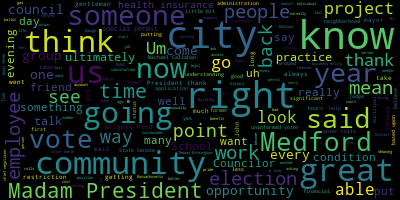
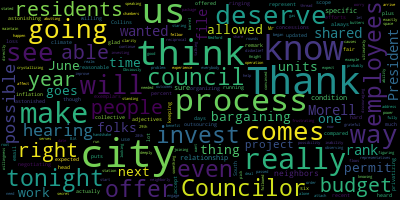

[Morell]: Third regular meeting of Medford City Council, January 31st, 2023 is called to order. Mr. Clerk, please call the roll. Mr. Clerk, please call the roll.
[Hurtubise]: Mr. Clerk, please call the roll. Mr. Clerk, please call the roll. Mr. Clerk, please call the roll. Mr. Clerk, please call the roll. Mr. Clerk, please call the roll. Mr. Clerk, please call the roll. Mr. Clerk, please call the roll. Mr. Clerk, please call the roll.
[Morell]: Mr. Clerk, please call the roll. Mr. Clerk, please call the roll. Mr. Clerk, please call the roll. Mr. Clerk, please call the roll.
[Hurtubise]: Mr. Clerk, please call the roll. Mr. Clerk, please call the roll. Mr. Clerk, please call the roll. Mr. Clerk, please call the roll. Mr. Clerk, please call the roll. Mr. Clerk, please call the roll.
[Unidentified]: Mr. Clerk, please call the roll.
[Hurtubise]: Mr. Clerk, please call the roll. Mr. Clerk, please call the
[Morell]: On the motion of Councilor Knight to suspend the rule seconded by Councilor Scarpelli. All those in favor? All those opposed?
[Knight]: Madam President, I offer a motion this evening as I look out in the audience and I see a number of our friends from organized labor that are here this evening. Normally they have been able to provide us with updates throughout the course of this past term. as to the status of the contract negotiations and the status of labor relations here in the community. And they've always very patient. They usually wait till the end of the meeting, sometimes three and four hours after the opportunity to speak before this body. So I thought it'd be a nice gesture to allow them to speak first this evening.
[Morell]: Thank you, Councilor Knight. And there's a motion to take public participation out of order. Thank you. All right, so we already suspended the rules to take public participation. So who would like to come up and speak? Name and address for the record, please.
[South]: Good evening, Madam President, members of the City Council, Stephen South, 106 Damon Road, also Secretary-Treasurer of Teamsters Local 25. I've come here tonight. Recently, the mayor gave a state of the city address and we are here to give a state of the union negotiations address, if you will, or update. So currently Teamsters Local 25 represents hundreds of your employees and our members within the city of Medford in eight separate bargaining units. And I'll give you a short update of where we are on the bargaining for all these. With the DPW group, many of them are here tonight behind me. Their last raise was January 1 of 2022, and we had our last negotiations on January 20, which seems to be the end of the city's good faith bargaining. The city has verbally gave us a last and final of 2% each year for three years on top of a bunch of concessions. And for those of you on this side of the rail and this side that aren't aware of what concessions mean, that means that a lot of the benefits that the employees, the hardworking employees behind me currently enjoy, the city wants to take away and give them only 2%. The city's inspectors, recreation department, and DPW superintendents, the second group, their last raise was January 1, 2022. We also met on January 20, and the city gave us their last and final of many concessions to the benefits and things that our members currently enjoy, and also 2% each year for three years. in the January 20, 2023 was the last meeting. January 20. Yes, when they told us one of the make sure things when they made it clear that none of our groups are getting more than 2% each year. The parking department, which just came into existence in January of 2022, they've never had a race. And since you hired these people and created this department, they have suffered more than any more than most groups in the city, including but not limited to. You have changed their schedules from a five day work week to a six day work week. They're now required many of them to work Monday through Saturday and that's to get 35 hours pay.
[Morell]: Just to be clear when you're saying you. Council has not made that change. The city administration has.
[South]: Yes, the city. Correct. The city's administration, the mayor and her people. They're required to work six days a week. This is not optional. And that's to get 35 hours, which there is no other bargaining unit in the state of Massachusetts that I'm currently aware of that is required to work six days to get 35 hours pay. They've also changed it to where now these guys have alternate schedules, meaning this week they work days, next week they work nights, the following week they work days, the following week they work nights. Call it an alternate schedule. Some of these guys have families. I don't know how they can plan their family life with a wife and children with those schedules. And I know many of you have families, so I know you can appreciate that. don't fall over, they put body cameras on our parking control officers. And I do want to point out, and I love the police in Medford, they are amazing, but the police in Medford don't wear body cameras, but the parking control people that write tickets wear body cameras. It was never bargained with Local 25, we currently have litigation outstanding related to it. They also, when people call in sick, they will change their hours even on a day-to-day basis. If someone calls in sick tomorrow and you're a day person, they may make you work nights. These guys really have a tough road. That's the parking department. And again, the city has indicated we're meeting with them tomorrow, but the city's attorney, not the city's attorney because we don't have any, but KP law attorney indicated that they would be offering 2% for all of our groups. Number five is the Medford Clerical. Their last raise was January 1 of 2019, which is over four years. It's exactly tomorrow, 49 months since they had a wage increase. We last met about three weeks ago, and the city had offered us at the previous session Now, mind you, other groups got $1,500 COVID bonuses. They offered us $500 COVID bonus at the previous session, and at the last session, which was our final, they went from 500 to a 0% bonus. And one of our big issues with that group is these are some of the lowest paid employees in the city, and right here in this building. And there's a couple different classifications in that group the junior clerk and senior clerk which are, I believe, the lowest paid employees in the city. So we asked the city to do a market rate adjustment which many communities have done. And they agreed, finally, at the last session and said that they would agree to give the lowest paid workers in the city a $4 per week wage increase. So that was the city's fix for their very low wages. And I don't mean per hour, per week, $4 per week in addition to their raises, $4 per week to make it better. So that's obviously a no. Let's talk about the schools and the school security. And I know that's been a huge topic in the last month plus. Our school security personnel, their last raise was July 1 of 2020. That was three years and a month ago. They currently make $17.50 per hour. These are people that are reporting to fights and stabbings, a stabbing, I should say. They have a very difficult job, $1,750 per hour. So obviously, we're trying to bring that up. But the problem in that negotiation is the city is offering us, again, they just settled with the teachers and gave them $1,500 per year COVID bonuses, and they're offering us half of that. It's unacceptable, and that won't happen. School custodians last raised July 1, 2020, three years and one month ago. Same thing, they're being offered less than the teachers. that less bonuses, less raises. And number eight is the school administrators, directors, coordinators, assistant principals, outside of the superintendent and assistant superintendent, these people run Medford Public Schools. Their last raise was January 1 of 2021, a little over two years ago. And the city took the position at the last, negotiation we had a few weeks ago that they currently don't even have a contract because they switched to the teamsters. We filed an unfair labor practice with the Massachusetts Labor Relations Board and that's currently pending. Um, and they also notified us that they would not process any grievances because this group doesn't have a contract. But either way, they're telling us that regardless of all that, they're not agreeing to what the teacher's got. And these are people that supervise teachers. That's number eight. So I know all of you, not all of you personally, some of you personally, some professionally, and I know you're all very smart people. I have a lot of respect for what you all do. So I know you're probably thinking in your mind, well, why is that? And what are other communities getting? And what are other groups getting? Well, if that is your question, I have the answer. And I can provide you, and I send you guys emails. Other times I can provide you with these via email if you wanna see them. So I negotiate all the surrounding contracts in surrounding communities. In the last year, a little over a year, I've negotiated in Everett, three separate collective bargaining agreements. It's a four year deal, 3% each year, three, three, three, and three, with many other improvements. In Malden, about three months ago, I settled a contract in Malden. This was 3% each year for three years, three, three, and three, with market rate adjustment raises on top of that and many other improvements. That's Malden. In Chelsea, we just settled a three-year deal with Chelsea, 4%, 3.5%, 3.5%, and market rate adjustment raises with many other improvements. Chelsea. In Newton, Little over a year ago, we settled a four-year deal, 3% each year, 3, 3, 3, and 3, and market rate adjustment raises on top of that with many other improvements. In the city of Waltham, about 3 and 1⁄2 weeks ago, I settled a contract for 80 employees there, 3.25, 3.25, 3.25, market rate adjustments on top of that, a three-year deal, many other improvements. In North Reading, About three months ago, I settled a contract with the North Reading DPW, 3% each year, 3, 3, and 3, with many other improvements. In the town of Stowe, last year, I settled a contract for the DPW there. and it was anywhere between 15 and 21% for over three years. That includes market rate adjustments and many other improvements. So that's seven communities, six are right near here, one still is a little bit further out, but that's just in the last little over a year, myself personally negotiating with the surrounding communities. We're being told by the KP law lawyer that any final deal with any of our groups will be 2% each year. And they're also insisting upon many concessions with my groups. Just to give you a quick update that I know that the city does not provide all of you, and I come here every month or so to provide it to you. Currently, my members have five open federal lawsuits against the city. These are wage and hour lawsuits. These are five separate groups of employees. We have approximately 30 or a little over 30 unfair labor practice charges with the Massachusetts Department of Labor Relation. And we've been meeting. We met with a mediator just Friday, a state mediator, to try to mediate some of these before we go to more hearings. We've received favorable decisions from the Labor Board. I've been sending them to you via email. There's been several of those in the last few months. We have an open complaint at the Secretary of State's office for the city refusing to provide the union with public documents, including bills for KP Law. They gave them to us, but they were 100% redacted. They claimed attorney client privilege, which there's no such thing with a simple legal bill that just states the dollar amount and what the issues were. We're also filing another complaint because we've been requesting information regarding the city's use of private investigators to follow city employees. They've provided us a bunch of information. over the course of a year with multiple requests and labor charges, but there's still information that they're redacting. And we feel that it's important, but they have finally admitted in writing that the city is hiring these people through KP Law as a shell. So KP Law hires them and then the city reimburses. And I think that's how they get around giving us some of the information. So regarding the open negotiations, and I'm almost done, I apologize for the length of my report, but, and I'll use a quote that I heard last week, very similar. This union, Local 25 and our members, our couple hundred members and their families, will never ever agree to 2% in a bunch of concessions. That will never happen. And the quote is, not now, not ever. That is unacceptable. And for all of you, for the city council, You know, we come up and report things to you often, but I never really ask of anything. But I'm asking all of you to assist with this, because this is your city, too. You all work here and live here. And it's not just us. And I can't speak for other unions, but I'm aware that there's other unions that are in the same boat as us, that are working without a contract, some of which are protesting with us, like last week. It's unacceptable. There's no reason why all of these other communities can provide fair wages, fair contracts to their employees, but Medford can't. That's just wrong. And the teachers settled their contract recently, and they settled for a four-year deal, 2.5 year one, 2.5 year two, 3.5 year three, 3%. year four for 11.5% over four years, and we're being offered 2% a year in a bunch of concessions. And I don't want this to be divide and conquer. I love the teachers. Many of them are my friends and family. They're amazing. They deserve everything that they got. They deserve more than that. But there's no way that the city can give a fair contract to 500 teachers and then tell the rest of the city that they have to take things away from them just to give them 2%. When last year, the inflation rate when anywhere from 6.5% to 9.1% and currently as of December 2022 at 6.5% and the new data comes out in a couple weeks. So I would ask all of you to write a letter to the mayor and her administration and demand that the employees that you all represent or that work in this city, just like you all do, that they get what they deserve. And we know these guys aren't gonna be millionaires. We know they're not gonna buy mansions off of city salaries, but they shouldn't be living in poverty. People shouldn't be making $17 an hour. People shouldn't be having to beg just to get a small raise. to be able to pay the bills. People shouldn't go 49 months and counting without a wage increase. That is just unacceptable. And this isn't a chess game. This isn't some kind of game, maybe for the administration it is, but these are real people with real families and spouses and children and dogs and mortgages and lots of bills to pay. So this is unacceptable. So I am finally once I'm asking you all to help, not to help me, but to help your employees and my members because what is going on now is unacceptable and certainly I'm open to any and all questions. I would even encourage if one of you wants to show up or all of you show up to our contract negotiations, I will gladly send you the dates for all of our upcoming negotiations, because I know this seems unbelievable. You're probably, I see a few of you shaking your heads, because it seems so ridiculous, and it is. But if you want to see it for yourself, under Mass General Law, I have the right to bring whoever I want to negotiation. So I would certainly offer an open invite to all seven of you. And Adam, if you would like to go as well, sir, you're more than welcome. So the eight of you. You're more than welcome to come to our bargaining and anything you can do to help. I know I appreciate my members appreciate and I thank you for your kind attention.
[Morell]: Thank you, Councilor Scarpelli.
[Scarpelli]: If I can, Mr. South, I appreciate. I appreciate the updates because I don't think people understand, you know, when you see the mayor come up and they do the state of the city address and everything's happy and, you know, skate with the mayor, that's a new one that's coming up. This is what infuriates this community. I remember just a few short years ago, this body, including the mayor, talking about the essential workers and how important they were during the most difficult time in our history. people that got up every single day to make sure the streets are plowed, make sure that the parks are clean, making sure that the pipes that burst are fixed. We made sure that our municipal workers, our DPW, were applauded, and this is a true slap in the face when it comes to what I'm hearing. So I have a dumb question, because I can only imagine. I know what's going on, but I will tell you as a first member of this community, I see each and every member that's sitting behind you in their trucks every single day, working every single day. I haven't seen one iota of change, and that's what I find impressive. So my question truly is, how is the morale of this team? I mean, I know, are we filling openings? I mean, are they still doing the job of our minimal compared to what we were looking for during negotiations when we heard the ridiculous numbers, when we talk about a city the size of Medford and the DPW team that we have and how limited it is, that hasn't changed, correct?
[South]: Well, yes, several questions. And first of all, I just want to say thank you for your service, for your question, and for the fact that you've always been a champion for the working people in Medford. So we appreciate it. The morale in Medford, not just with the DPW, but with all the different groups, is very, very poor. Frankly, I've represented workers in the city since 2008, and I've never seen it like this. It's actually depressing. The as far as being able to fill vacancies, the city's not posting all the vacancies and we are short staffed. We're extremely short staffed and we have been for many years. But it's funny that you asked because I just looked on the city's website today and saw some of the vacancies that are posted, such as the city solicitor, the assistant city solicitor, the IT director, the benefits coordinator, tree climber, And so on and so forth. The list goes on. And many of them that are vacant are not even posted. So that is also very problematic with our groups. Last year we saw people fleeing the city of Medford from working here, fleeing, not just the people that were unlawfully terminated, but people just quitting and going elsewhere. And I've gotten up and spoken about it previously. And I'm not just talking union members, I'm talking union management, non-union. I mean, just within the last few weeks, the assistant superintendent of Medford public schools quit to go work for Cambridge. What does that tell you? That was the number two person at Medford Public Schools, just quit. And that's now vacant. I mean, this is problematic. This has been going on the last couple of years, three to be exact. and something has to give. And I know that the state of the city, when addressed by one person, seems rosy, but it is not rosy. We have big problems in the city and something has to give, but I'm asking you all for your help. And I do appreciate everything you guys do, but I just want you to know how bad it is and how desperate your employees and our members are. Well, I appreciate that.
[Scarpelli]: And I think that this is what bothers us. I mean, you know, I'm hearing from from colleagues and neighbor communities that they they used to say they used to open a bottle of wine on a Tuesday night to watch Council Penter and Council Camuso go after each other. And they thought that was funny. But what you had there, you had two people that they had different views, but they both loved Medford. That was the key. And they wanted Medford to be the greatest city in the Commonwealth. What I'm seeing right now is what I'm hearing, what I'm seeing right now, not getting any financial paperwork. We don't know where the city's finances are. If this is an indication, I think this is pretty scary, that if she's only offering 2% to the most, the hottest working people in our workforce, that They're only offering 2% standing there. I find it scary to where we're going to be in June. So for one, I'll do anything and everything that I'm not afraid to stand on any soapbox if it can carry me and say whatever has to be said for the men and women that work for our city. I think that what we're seeing, what I'm hearing, is that the morale in this community is terrible. The workforce just isn't there. And everybody's being pit against each other. And what keeps coming back to me, the mayor made a comment that it's difficult to clean up city hall. I'm still confused with that comment. I don't know where that's coming from. She's been in office now, it's in her fourth year. I don't know what that means because all I'm seeing right now is a city that has no leadership. I'm seeing a city that has no directors and no leaders in different departments. We have a city council that has no power. We're an absolute laughingstock when I'm talking to colleagues in other communities that they can't believe what we have to do as a council when we're asking for simple documents to do our job. Now, are you just negotiating? Is this the, it's not the chief of staff, it's not the HR director anymore. I know that we gave him a fancy name with more money, but I don't, you know, that's the other piece is when we talk about the higher level. I'd like to see it. You probably have it somewhere. And if you could forward it to us, I'd like to see what the leadership at the school system is making. I'd like to see what the leadership here at City Hall is making that are in that are are negotiating with you because I bet you they're not worrying about how they're gonna pay their sons or daughters tuitions that members behind you have kids going to school as cost of living increases or the price of gasoline. So for one council, I'll do anything, any invitation that's offered to me, I'll gladly join in and share my support. I think what people really have to understand out there is that we're not in very good shape in the city. And this is a great example of it. The teachers settled, but they're not happy either. They're not happy either. We know they're not. but they know they had to go back. One thing we're seeing from our DPW employees, they're not stopping. There is no threat of a strike. They're still doing the job above and beyond. So I applaud them all and I applaud you for sticking with it. And you've named a couple of communities that I know employees that work there and are so pleased the way you negotiated fairly with their negotiating teams in different communities and their outcomes. And that's what's so frustrating with this community Again, it just, it brings a fear to my heart that if she's only offering 2%, how bad are we looking financially? No one's telling us, no one Mr. Selk. And I'm just afraid what's gonna come in a few months because this is a scary time and method. And I think people need to stand up and wake up because When the dust settles, the people behind you are still gonna be the ones standing up. They're still gonna be up at two in the morning plowing our streets to make sure our kids have a safe walk to school. They're gonna be the ones, when your basement's flooding, the first ones in the basement dealing with that junk in your basement. no question about it, and they need to be treated fairly. So for one Councilor, I'm going to stand beside you or in front of you to make sure that someone has to listen. So I appreciate what you're doing, and I appreciate everybody's hard work behind you guys. I'm sick to my stomach because I, you know, I'm, again, I hate to say it, but I work in a community that has hundreds of DPW workers that are making a lot of money, and then The administration, they are looking at readjusting their pay scale for what their wage analysis looks like with cost of living. So I can't imagine what our next negotiation looks like in my community that I work in, because it's fair. They want to keep people happy and in their community. What we're doing here in Medford is scaring people off. and no one's going to want to be here. And that scares me.
[South]: So thank you so much. Thank you, Mr. Scarpelli. I just wanted to point one thing out or clarify one thing. When you talk about us bargaining with the city officials, we really don't bargain directly with them. We bargain with a K. P. Law attorney who deals with does all the grievance hearings negotiations meetings everything. There is someone from the city that sits quietly at all the meetings, just by himself and observes but we negotiate directly with KP law, and I'm aware that you're the only community anywhere around here because we negotiate with many of them. And some of them have three, four, five, six, seven solicitors. And Medford currently has zero for anyone that didn't know that. And those postings have been on the website for a long time for an assistant solicitor and city solicitor. And obviously it goes just like anything else. The city's not paying enough to attract people. to come and work here?
[Scarpelli]: To interject, and I don't want to be rude, but I sat at a fundraiser with eight former city solicitors, and I offered them all as a joke to please come work. I'll try to get them whatever they want to come to Medford. And the answer was, are you kidding me? We see what's going on there. It has nothing to do with what we're hearing, that it's the climate. It's very difficult to get people. No, it's getting very difficult to get people that can work here. That's what we're seeing firsthand.
[South]: So thank you. Well, if the climate's bad at the schools, they just do studies for 50,000. All right.
[Knight]: Madam President, thank you very much. So thank you for being here. And once again, providing us with such a detailed outline as to the status of the negotiations for the 200 plus families that you represent here in the city of Medford. Um, recently it was brought to my attention that there's a certain issue with new hires and their ability to access health insurance. Um, you know, it's, I have a little bit of a background in the union as well. And it's my understanding that, uh, here in the city of Medford, the municipal employee is required to offer health insurance to their employees.
[South]: If they work what more than 22 hours a week, I believe, is it? I believe so. And the city always have, uh, up until this year, last year, I should say back when the mayor was the city councilor,
[Knight]: She used to have to fill out this affidavit and submit it to mayor Burke in order to get her group health insurance that she was receiving from the city when she was a city council. and she had to file an affidavit that said I work 22 hours a week and that made her eligible for the health insurance that she received through the city. So I was looking at this and I'm not understanding why exactly a new hire now in this community that would come in that's working 37 and a half hours a week wouldn't be afforded the same group health insurance benefits that every other employee here in the community is being offered. Is there an understanding as to what's going on with the application of this benefit?
[South]: There is not. This is new. And I know that a grievance was filed today by the Public Employees Committee, which is all the unions that negotiate with the city regarding health care. That was filed today. And I can forward that to all of you after this meeting. We're not sure. The city's taking the position that a new hire that starts isn't eligible for health care till open enrollment, which is the opposite of what this city has done for decades and the opposite of every other community in Massachusetts. My only guess, because no one will tell me, is the city no longer has a benefits coordinator. They're trying to hire one. And I assume that just like a lot of other functions within the city of Medford, the work just isn't getting done because there's no one in that position anymore. I don't know. We can't get a straight answer.
[Knight]: haven't worked in insurance and haven't some experience in insurance it seems to me like the open enrollment period especially for employees in the GIC is usually what sometime around June or July is it? About then, yes. So what what they're saying is that if an employee that started now in January wouldn't be able to access health insurance while being a city employee for up to 11 months
[South]: That's my understanding, and prior to the city taking that position recently, in the city of Medford and every other community, starting as a new employee is a qualifying event to become eligible for healthcare. Right.
[Bears]: Point of information, if I may. The letter we got said that the administration told those people to buy their own insurance. in the interim. So I just want to be clear about that too. It's not just, we're not going to give it to you. They're saying, go buy some, you know? So yeah, it's ridiculous. They have to purchase insurance in Massachusetts. You have to be insured you get penalized. You're right. It's just, I'm just, I just want to add that to the conversation. It's not just, we're not going to give it to you. It's go buy your own, even though you're entitled to a benefit.
[Scarpelli]: And in the community I work in, I hired someone yesterday. That person starts with health insurance the day they start, which is February 18th. So that is, that is completely false. I deal with that every day. To say that they have to wait for an open enrollment is false. It's a disgrace.
[Knight]: Thank you, Mr. Seltz. I'm sorry.
[South]: Thank you.
[Knight]: You know, what I see, Mr. Seltz, to be honest with you, is a trend. It's a pattern, right? And I think it has less and less to do with good government here in the community. It has less and less to do with doing what's right for the workers in this community. And there's more to do with a vendetta, right? Someone that's vindictive, someone that's upset because you're speaking out, someone that's upset because you're expressing the concerns that your membership has and doing your job. And it might be putting some some rust on the can of the administration. All right. So the way I look at this is I see a lot of it is retaliatory. You know what I mean? I see no reason for this. I don't understand why the cost of living adjustment for one group would be more so than the cost of living adjustment for another group when the cost of living is really a reflection on inflation and how far you can stretch it all. And ultimately, we want to keep, you know, the rank and file employees in this community working. They're a hard working group. You know, I've had the opportunity to know many of these people for a very long time. And, you know, when You pick up the phone and you call, they always answer, they always deliver, they're always there. And like Councilor Scarpelli said, your group prides itself on showing up for work every day and doing its job, regardless of what the climate is here on City Hall, regardless of what's going on between the administration and the union, they come to work every day and they do their job. And that should be reflected in this wage package as well. I'm very grateful for the work that your employees do, that your members do, and that these employees do. I thank you again for coming up here and sharing with us your experience.
[South]: Thank you, Councilor Knight.
[Hurtubise]: Councilor Caraviello.
[Caraviello]: What's the financial hit the community is going to take when all these lawsuits settle and we finally settle all these contracts between back pay and raises? Do we have a number, a guess of a number, what the city's gonna be on the hook for?
[South]: I don't. This is a private law firm, a wage and hour law firm that files these lawsuits on behalf of your employees, my members, but I can tell you that one of the lawsuits that the city just settled last summer was for $475,000, and there's five outstanding lawsuits right now. I have a question. Yes.
[Caraviello]: This board is supposed to approve all How come we never saw that here? Who would tell us anything? Thank you for telling us, we never knew about that. But that's our job, and when there's a settlement, what's over $5,000, we're supposed to approve it. Never saw an approval on that. But you know, so that's really my question. I don't know what the financial hit is. Is there going to be this community next year going down the line? Eventually these contracts will settle. But see, and again, we have no idea where the lawsuits are going. But you know, as you mentioned, you know, people leaving the city. But what they do is they leave, and then we hire you part time to work here for like So we're a full-time city with a bunch of part-time employees. So our economic development director leaves. He's working here 10 hours a month now. We hired him for 10 hours. The guy left. The assessor left. We have a part-time assessor here, and we borrow, and she works for Lowell. So another part-time employee. The person who just left the school, took a job in Cambridge. They hired him to come back and do the budget, because they didn't have anybody to do the budget. So all we do is, people walk out the door, we hire them back part-time. We're a bunch of part-time employees here.
[South]: Don't forget the IT director and the assistant IT director who were both fired, we believe, illegally in this litigation.
[Caraviello]: I mean, when does this stop? When does this revolving door stop? Everybody I look at, they're all life, most of them are lifetime members of this community. We've never seen a revolving door like this ever. I had a meeting before this, next door with somebody, and they asked me a legal question. I was embarrassed to say, I says, I can't answer because I don't have a lawyer to call to give me a legal answer. And I was embarrassed to tell that to five constituents in the other room when they asked me a question. So how do you think that makes me feel as an elected official when I can't answer a constituent's question and I don't even know where to go to get the answer to their questions because we have no lawyer and we have no access to an attorney, which is really a shame. But I would really like to know what the financial hit is going to be in this community when all these contracts settle and the guesstimate when all these lawsuits settle. Thank you. Thank you for the work. And again, I think I see these guys working every day, and they don't miss a beat.
[Bears]: Thank you, Councilor Caraviello.
[Morell]: President Bears.
[Bears]: Thank you, Madam President. I'm going to try to be as brief as I can, but I think the quote that stood out to me that you said, Mr. South, is we can't get any answers. I think you said that directly. I think all of us behind this rail feel exactly the same way. It's not the same. It's far worse for people not to be getting raises and benefits and pay and health care that affects their families and their lives. But we do share the fact that when we ask for information, we ask for anything, we don't get it either from this administration. Frustrated may even be a kind word. I think there's days when I'm furious. We aren't getting what we need. And I just want to put on the table here for you, and then I have a question at the end. There's 12 items that have been sitting on our agenda table, some of them for over a year that we've been holding on because we don't get basic information on the budget there's another three items on our agenda that are asking for basic information on the budget and finances that we don't get. The only reason there was an assistant city solicitor job posting is because we made it clear that we weren't going to pass a budget unless they created the position. And we held multiple meetings to expose the budget issues last June and we haven't gotten any answers for nine months so I completely share your frustration and the frustration of every city employee that we don't have answers. You know, city employees are the lifeblood of the city, they make it run. And I completely agree with what Councilor Scarpelli said, the fact that everybody has been showing up every day and doing their job in the face of treatment that they may not have experienced in 10 or 20 years, or even two months. I don't care if you're a brand new employee, you're coming to work and you know that you're not getting a raise, or you're brand new to the city and you're being told you're not getting healthcare and you're still coming and doing your job, it's deeply appreciated. And it also shows why so many people are leaving from all the different positions that you mentioned before. I just had a question on the healthcare piece that was brought up. I know you didn't bring it up and it came up here, so no issues if you don't have the answer. Do you know if every new hire is being told they're not getting healthcare or is it selective?
[South]: I can't answer for all the other unions, but I have heard from a couple other unions that have the same exact issue, but I'm not privy to the info for all of the unions, so I don't know. But it is affecting more than one union.
[Bears]: Yeah, and that's become very clear to me with the information that I've seen over the last few days, but I also just want to see and make sure that it's not selective, if you get what I'm saying. Yeah.
[South]: I'm not sure I can answer that. Yeah.
[Bears]: Because that would, you know, just add insult to injury. And then in terms of the bargaining sessions, hey, I'd be happy to take you up on your offer to attend one because I'd like to see what it's like. But you just want to clarify, you said the only people who talk on the city's behalf are representatives of KP law. Correct.
[South]: The city doesn't say a word in the meetings. City officials, I should say. Councilor Nett is a follow up. That's all right, ma'am.
[John Wood]: Does the mayor show up at these negotiations?
[South]: Never. We've requested, because the KP law attorney states that all of the sessions he has certain authority. And we said, who provides the authority? He states the mayor. And we've asked on numerous occasions that the mayor show up so that the person that makes the decisions is in the room. And they've declined.
[Knight]: And pursuant to a city charter, if I'm not mistaken, the mayor is the chief negotiator for the community, right? That's my understanding. The mayor is the chief negotiator, so ultimately we have five bargaining units with unsettled contracts and the chief negotiator refusing to meet with these five unions and instead sending an underling. It's paid for outside the scope of city employment.
[South]: Councilor Knight, we have eight bargaining units, five are in the city, three are on the school side, and my understanding is she's in charge there too, she's the head of the school committee. But yes, the mayor's never attended any of the sessions for any of the eight bargaining units, ever.
[Bears]: Thank you very much. You're very welcome. Thank you. And yeah, Mr. South, if you could just share, I appreciate you offered to share the information on the other contracts. If you could share that, and then if you have information on upcoming sessions, I'll try to find one that I could attend. I really appreciate it. Thank you.
[Collins]: Councilor Collins. Thank you, President Morell. Thank you, Mr. South, for being here for tonight and for always keeping us updated. You know, there's a lot that's astonishing in what you shared with us tonight and what you've shared with us over email in recent days. It's hard to even remark on it, but I wanted to just thank the rank and file that you represent for being here. Thank you for your organizing. Thank you for your efforts. There's so much to really be astonished by, even though we've heard, I don't even, I'm running out of adjectives to use, you know, the scope of what's being offered to your bargaining units compared to what could be expected to be reasonable or fair. Just one thing that's ringing in my head 2% with concessions in a climate of six plus percent inflation, it puts me at a loss. And I'm glad to see that the rank and file is not willing to accept such an offer. I think that one of the exemplars of this, we're actually outsourcing or privatizing the folks who are negotiating with our collective bargaining units. And if there's not a crystallizing example of this problem, if that's not it, I don't know what it is. It's a really frustrating time, I think, to be on the city council and have what rounds down to no power over the root causes of this, which is our inability to invest in our city employees the way that they deserve and the way that our city deserves, the way that our residents deserve. I think, Obviously, this all comes down to will, comes down to the will to invest in our city the way that it serves, and that it comes down to the ability to do that. We're talking about the budget, but all of our realm of possibility here flows from that. I think we passed this year's budget on June 28th. I think this probably goes for all my fellow councilors. What date did we start worry about our next budget? June 29th. It's a discouraging time to be in, to be looking at what's going on right now and staring down the barrel of what we're ever going to be able to offer to the folks who make the city work and make the city run next year and the year after that. When it comes down to what we're able to offer the city employees, it's not just the work that they do, it's investing in the people themselves. And I don't know how we're going to expect to maintain, let alone improve our city and the experience of our city if we're not figuring out how to invest in the people that make that happen. So I just wanted to share some of my disbelief over what we are hearing tonight, what we've been hearing, and thank you to all the city employees that are standing up for what you deserve.
[South]: Thank you very much. And I just want to point out one other thing when you talk about the city contracting out legal services. And I would just mention that when we have somewhere about 40 or a little over 40 separate litigations and all separate arenas and jurisdictions and federal court and the labor board and the secretary of state and all these different places. The only winner in that game of months and months and even years is KP Law getting paid every single day, every single meeting. In the last year, we've had numerous arbitrations, mediations with state mediators, negotiations with all of these different units and meetings and hearings in all different jurisdictions. They're the only ones winning in in that scenario, and they are. In all the other communities that we have any kind of labor relations meetings or negotiations, most of them use their in-house attorneys, including many of the communities I mentioned earlier. So you hear the term, follow the money, you hear that a lot, follow the money and where does it lead you? And the only winner in this community, when all of the families of, Your employees and my members are hurting the winners and all of this is KP law, I just wanted to reiterate that because I know all of you know that. Thank you.
[Morell]: I'm going to go back to Councilor Tseng before that, and then Councilor Caravielloa I do just want to note that we have several items on our agenda and it's, we've been on this for about 15 minutes so I just want to know that this is for back and forth so I appreciate the information but just
[Tseng]: Thank you, President Morell, respecting that I'll try to keep it brief. I wanted to thank you for the information, you know, we always do that when you come, because we, as other Councilors have said, we don't get this information from the administration, oftentimes, when you come to us that's the first time we're hearing of it when you email us that's the first time we're hearing it. And when you give us that information, it gives us at the very least a place to start to ask questions and to demand better from from the people across the hall. So I really wanted to thank you for that. Obviously, what you've said is very concerning, not just for us on this side of the aisle, but all the residents at home watching as well. And, you know, what we've been talking about, we've been talking about tonight, like health care, like, like, legal bills, you know, fiscal response to questions of fiscal responsibility, all of this is common sense. I think all of us sitting in the room here can can can agree that, you know, we shouldn't we shouldn't hire employees and not give them health care. That's not right. Um, I also want to thank all the workers and the rank and file sitting behind the rail on the other side of the rail tonight for coming out I know you're taking time out of your evening to come to us, taking time out of time with family. I wanted to acknowledge that and to thank you for coming as well. It's really important for members of the community and for us to see you guys as well, and it really helps, you know, show us and show the people at home watching that, you know, we're not talking about an abstract group of people, we're talking about people If we can put faces to the people who actually are keeping our city running and, you know, when we talk about policies and makes recommendations and all of that behind the rail, you guys are the ones that have to go out and execute that, right? And the pressure on your job is just increasing and increasing every day. And to have all of this on top of that, you know, that's not right. We need to recognize that when we when we deal with each other I mean, even even between Councilors but at all levels in city government and government we have to treat each other like human beings, and we have to understand that you guys have families, you guys have homes to go, go back to people to feed. You know, we can talk all day about, you know, all these different concepts, but it's really helpful. Or it's, it's really important to understand that you guys are human beings too. I hope, I hope this tonight helps with that. And I really wanted to thank you for your dedication. Despite the lack of morale, all the hard work that you guys are still putting into city work, that's really meaningful and I think shows your dedication to our community. I had a few more points written out, but I think I'll end it there because other Councilors have already pointed out a lot of our problems and a lot of the concerns that we have very eloquently. So I'll leave it there, but I just want you guys to know that this council stands with you guys and understands what you've been saying tonight. Thank you, Councilor Tseng.
[Morell]: Councilor Caraviello.
[Caraviello]: Quick question. You mentioned a $465,000 settlement. $475,000. Was that a wage settlement for wages? Yes, sir. Okay. And what union was that with?
[South]: That was the custodians. Custodians, okay. I did report on that last, I believe, June. I know we have a lot of different issues. Okay. And isn't it the law that we have to provide health insurance?
[Caraviello]: That's my understanding. That is the law, correct? That's my understanding. Just wanted to make sure that I wasn't wrong. I thought everyone, over a certain amount of police, they're required to provide health insurance. So we are in violation of the law by not providing these other people with health insurance.
[South]: That's my understanding. If you work a certain amount of hours, you have to be provided, correct?
[Scarpelli]: Right.
[South]: Thank you.
[Scarpelli]: Thank you. Madam President, I know before, I'd like to move back to the regular order of business. made a comment. I just want to make sure council president I did talk. I know that we called for a meeting with the school department to work together to see what what the process is with security and how that's going and then looking to see what funding mechanism we need moving forward for support. So I know that the council president has been working hard to try to knocked down a meeting with the superintendent, the mayor, the school committee and the city council. So we can work on that, at least work on that piece and to see where we are, where we need to be. So I just wanted to give you an update with that.
[Morell]: So I'm working with vice chair Graham on that.
[Scarpelli]: All right. Thank you.
[Morell]: Um, I do see Susan, you're on your hand up. Is it about this subject or another public participation matter? You just to
[Gerard]: Yes, I'm pretty horrified about the treatment of the workers in the city. Yes, my name is Susan Gerard. I live on Farragut Ave. I've lived in Medford for 42 years, and I've also been a union organizer and stood on many picket lines. I'm really pretty horrified at what's going on with your unions and how they're being treated. I have two questions. One is, what can residents do to support you, whether it be a rally, picket line, or whatever? And number two, people have talked about how dedicated you are, and I know you are. And the same question came up for us as teachers and the teachers union, which I was part of. We never want to go on strike because we do not want to hurt our students. However, sometimes when push comes to shove and things are terrible enough, people do go on strike. And there's a teacher's union on strike right now, as you know, because of the low pay of some of the workers. So my question is, A, what can we as residents of Medford do to support you? And B, are you considering strike?
[Morell]: Through the chair, I know.
[South]: I can answer that.
[Morell]: If you could briefly. Sure. This isn't meant to be a forum. This is meant to be a
[South]: Thank you. Thank you, Susan, for the questions, and I appreciate the support. Number one, we have been engaging in legal, legal, not illegal, legal activities for the past year plus, including picketing, sign holding, leafleting, all different things. We'll continue to do that. Month after month, we just had a protest last week with one of the other firefighters. We're going to continue to do that, and we would love to have community involvement, so we will put that out publicly for next one. And as far as your second question due to legal reasons, I just would prefer not to answer that question. But I will say that, uh, we definitely have. There's a lot of things that we're looking at on that are on the table to try to resolve these issues. But that specific question I can't answer.
[Morell]: Thank you. We have a motion from Councilor Scarpelli to revert back to the regular order of business, seconded by President Bears. All those in favor? Aye. All those opposed?
[Unidentified]: Motion passes.
[Morell]: accolades, remembrances, reports and records 23-019 offered by Councilor Knight. Be it so resolved that Medford City Council hold a moment of silence in memory of Governor's Councilor Michael J. Callahan, a dedicated public servant who passed on January 6th, 2011, following decades of public service to the people of Medford, and be it further resolved that this evening's council meeting be dedicated to his memory. Councilor Knight.
[Knight]: Madam President, thank you very much. Michael Callahan was a dear friend of mine, someone who represented the city of Medford and its people with great pride and dignity. He was a Vietnam War veteran, the founder of the Medford Consumer Advisory Commission and past commissioner. He was the aide to the late Senator John Bullock, an aide to the late Senator Dennis McKenna, the former assistant commissioner of racing and chief steward for the National Association of Government Employees, just to name a few roles that he helped, Madam President. Michael Callahan was also elected our governor's Councilor, and he served with dignity representing the people of this community for over a decade. Michael passed away on the last day of his term in office. He was never able to reap the benefits of his pension reward. But he was someone who has some fame here in the city of Medford for saving Wrights Pond. And if you go up to Wrights Pond now, you will see a memorial honoring Michael Callahan that Mayor McGlynn put in to recognize the work that he did. back in the late 80s when Medford was undergoing quite a development boom and the condos were being built around the city. There was a proposal to turn Wrights Pond into residential housing and Michael Callahan was the catalyst in organizing the neighborhood against this proposal and saving Wrights Pond and keeping it as the beautiful recreation destination that it is today. And with his vision and foresight, Wrights Pond is now probably one of the city's number one assets. So with that being said, I'd like to take a moment to honor my friend. This is something that I've put on every year since Michael's passing. He's someone that really cared about the city. We talk about having blue and white debates. We talk about people that step up to the plate and really put their money where their mouth is. And Mike Callahan was that guy. When he ran for State Senate back in 2005, his logo was, he helps people. And there was no more truthful saying than that. My county, I woke up every day to help people. And he took great pride in it. And he always said to me, you could measure your wealth in many ways. You could measure it monetarily, or you could measure your wealth in the number of lives that you touch. And Michael is just a great individual who touched many lives. And he was the wealthiest man.
[Morell]: Thank you, Councilor Knight. Any further discussion on the motion of Councilor Knight, seconded by Mr. Behr. All those in favor?
[Unidentified]: Aye.
[Morell]: Opposed? Motion passes. Please rise for a moment of silence. 23-020 offered by Councilor Knight. Be it so resolved that the Medford City Council wish John Granar a happy 80th birthday, Councilor Knight.
[Knight]: It's not so often that someone gets to reach the great age of 80 years old, an octogenarian, I believe they're called, Madam President, but John Grenard is someone who is very familiar to all of us who are involved in public life here in the city of Medford. John was a former member of the Medford School Committee, a former member of the Massachusetts House of Representatives. John served as the special sheriff to Middlesex County under Sheriff DePaola. He has a very, very, very prestigious record of public service here in this community. One of the most brilliant men I've ever met in my life when it comes to political analysis and the ability to look at an election. Also a great volunteer of his time, service, energy to many neighborhood and community groups here in the city, most notably the Medford Elks, for example, and the American Legion Post 45, where he'd perform countless hours of pro bono legal work for them and making sure that their assets were protected. John's been a great friend to me. He's someone who I admire greatly and I'm glad to see that he had the opportunity to celebrate his 80th birthday surrounded by his friends and family. And I want to take an opportunity just to extend a happy birthday to him and to let him know that he means a lot to the city of Medford still. And I ask my council colleagues to join me in this celebration.
[Scarpelli]: Thank you for counseling. I bring this up. Mr. Granada is definitely someone that, um, that anyone can go to, especially in the political field, to talk to him and get the true insight of what the energy is in our community. And it's someone that has that type of knowledge and that type of passion and love for the city of Medford is someone that's so vital to our community. I know that we haven't seen him around much, but I know that he's someone that we should be very proud that we can call him our friend. So I wish him a happy birthday and many more. So thank you.
[Morell]: Thank you, Councilor Fele. On the motion of Councilor Knight, seconded by Councilor Tseng, all those in favor? Aye. All those opposed? Motion passes. 2-3-0-2-1, offered by Councilor Knight. Be it so resolved that the Medford City Council hold a moment of silence in honor of the late former Senate President, Thomas Birmingham. Councilor Knight.
[Knight]: Madam President, thank you very much. When I first got out of college, I had the opportunity to work underneath Senate President Thomas Birmingham in the Massachusetts State Senate. And he was certainly a brilliant man, a great leader, former candidate for governor as well. And I had a great opportunity to work on his gubernatorial campaign where I got to spend a significant amount of time with him and I learned about what a great person he was. raised in the community of Chelsea, representing Revere Charlestown and Chelsea. Thomas Birmingham was elected to the Massachusetts State Senate after defeating, I believe, Reggie Volk. And he served in the State Senate admirably, rising to the rank of Senate President. Most notably, he is remembered for the Education Reform Act of 1992. And the Educational Reform Act of 1992 established the standardized testing, standardized measurements of public schools so that we'd be able to identify and compare apples to apples data between school districts. It also enacted what's known as the School Building Assistance Program. And the School Building Assistance Program was something that we here in the city of Metric were able to utilize 23 years ago for the construction of other schools in this community. So when you talk about Thomas Birmingham, you talk about a gentleman who was surrounded by great help And when you talk about some of the great help that he was surrounded by, you have to mention on real world. Who serves here on our community development board, we have to. I'm sorry, CBA now, yes, yes, multiple hats. We talk about James Francis Xavier Walsh from High Street who worked under the Birmingham campaign and worked under Tom in his office. He was a great mentor and cultivator of great talent and a great individual that really cared about his community in this state and he accomplished a great deal. It would be sad to miss, so I ask my council colleagues to join me in honoring him and extending deepest condolences to Selma and the family.
[Morell]: Thank you on the motion of Council night seconded by bears all those in favor, I suppose motion passes please rise for more silence. 23-022 offered by Councilor Caraviello, be it resolved that the Medford City Council send its deepest and sincere condolences to the family of Tom Aniletto on his recent passing. Tom was a longtime Medford business owner, veteran, and disability advocate, being a board member for Project Triangle for over 50 years. Councilor Caraviello.
[Caraviello]: Thank you, Madam President. I bet you most people in the city don't even know who Tom Aniletto is. Tom was a silent giant in this community, especially for children that had disabilities. Tom had two children that had disabilities, and he served this country as a veteran here, but he was a tireless volunteer in this community. Most people don't know, but back in the 60s, Tom and another person started a program called the Friday Night Program, where they took children with disabilities into their home so the parents could have a Friday night off. And Tom did that for probably 50 years. until these kids got to be like 60. They became older than us, but he was a tireless volunteer in the community, donated to everything. I mean, he was that go-to guy for whatever he needed. He wanted money with something. Tom gave him money, he didn't never ever look for accolades or anything. So like Councilman Scott mentioned in the past, When guys like Tom die, nobody is stepping up to fill those shoes. So Tom was a friend and these are a big set of shoes in the city that are gonna need to be filled. So I ask for a moment of silence in this passing.
[Morell]: Thank you, Councilor Capello. Councilor Knight.
[Knight]: Madam President, thank you very much. And Councilor Capello, thanks for putting this item on the agenda. I've known Tom for probably 15 years. His nephews, Matt and Joe, I know very well as well. And this is the first time I ever heard that story. about the Friday nights. It's amazing. Um, Tom is a great person, a great friend and like Councilor Caraviello said, he was a gentleman, a true gentleman, someone that, um, was bigger than life, but, uh, very quiet, very quiet gentleman, uh, someone that when he spoke, uh, it was with a purpose and, uh, it was usually, uh, to give you the right piece of advice to say the right thing. It'll be sadly missed. And I thank the council for putting this resolution.
[Morell]: Thank you, Councilor Knight. On the motion of Councilor Caraviello, seconded by Councilor Knight. All those in favor? Aye. All those opposed? Motion passes. Please rise for a moment of silence. Records. The records of the meeting of the January 17th meeting were passed to Councilor Knight. Councilor Knight, how did you find them?
[Knight]: I'd like to ask that the records be laid on the table, Madam President.
[Morell]: On the motion of Councilor Knight to lay the records on the table to the next regular meeting seconded by Councilor Scarpelli. All those in favor? All those opposed? Motion passes. Reports of committee 22-519, I'm sorry, 21-053 and 23-018. These were the proposed amendments to the CBC ordinance, the housing stability notification ordinance discussion and the proposed CPC or the recommended CPC projects. Do I have a motion? Motion of Councilor Knight to approve, seconded by Councilor Tseng. All those in favor? All those opposed? Motion passes. Hearings 21-301 Medford City Council public hearing notice in accordance with the requirements of Massachusetts general law chapter 148 section 13. The Medford City Council will hold a continued public hearing on January 31st 2023 at 7pm or as soon. Thereafter, as it can be heard at the Howard F. Alderman Memorial Auditorium at Medford City Hall, 85 George P. Hassett Drive, Medford, Massachusetts, 02155, and also remotely via Zoom for a remand hearing in the Superior Court proceedings in the case of BJ's Wholesale Club, Inc. versus the City of Medford City Council. The remand hearing will be based on the application of BJ's Wholesale Club for a flammable storage license for a proposed fueling station including two 20,000 gallon and one 24,000 gallon underground fuel storage tanks at 278 Middlesex Avenue, Medford, Mass 02155 in industrial zoning district shown on assessor's map P17 lot five and map 016 lot one. The original application is part of City Council Paper 21-301 from April 13, 2021. Plans for the proposed development to be reviewed at the remand hearing are on file in the office of the Medford City Clerk and may be inspected by the public during normal business hours Monday, Tuesday, and Thursday from 8.30 a.m. to 4.30 p.m., Wednesday 8.30 a.m. to 7.30 p.m., and Friday from 8.30 a.m. to 12.30 p.m. Any person interested or wishing to be heard should appear at the time and place of the public hearing. To attend remotely, go to the Zoom link, which will be posted on the Medford City Council section of the City of Medford website, medfordma.org city-council, and at the Medford City Clerk's office not later than January 27, 2023. Call 781-393-2425 for any accommodations slash aids, TDD 713932516. The city of Medford is an EEOAA 504 employer. By order of the Medford City Council, sign Adam L. Herneby's City Clerk Advertise in the Medford Transfer slash Summerville Journal on January 5th, 2025. As this notice states, this is a continuation of a public hearing that was held on the 17th. We had a presentation from BJ's. We also had it open for public comment. We left the public hearing open for any additional comment to be submitted at that time. I do not believe we received any. We did not receive any additional public comment. I will go to councilors first if they have any questions or discussion, and then we'll go back to the representative from BJ's. Councilor Scarpelli.
[Scarpelli]: Thank you, Madam President. So I think the representatives BJ's and of course our neighbors. I think that I received multiple phone calls and and the understanding of the process and where we are today. Um, it's it's a pleasant, um, pleasant response by the BJS team and what was asked for to really support those neighbors. I think that was probably the biggest sticking point of what was in the past I know that it was called the flagship store but it sure wasn't shown that way by our neighbors and the the concessions and the understanding of the commitment from BJ's and what really is being put back into our community into the plant to make it look very appealing and a welcoming site. Everything that we asked for in the council, I think that we found a way to capture that, but I know that there were a couple of questions that I know usually Councilor Knight, since we don't have legal representation here, that anything that's permitted stays with the permit, Councilor Knight, is that with the permitting? Okay, so that was one of the questions I was asked, that if BJs happen to, we don't see it happening, although they'll close, but one of the questions, what happens to that site if BJs does step away? What happens to the tanks in the ground, to the environment? Does this permit go with the permittee or does it go with the land? That's one of the questions. And then the other question that came up and it was just passed over a few weeks ago was that back gate. the gate on the Felsway side. I know that there was some talk saying that back there was arrangements that that was closed at the end of the evening to stop any traffic coming in from Felsway as people use it as a cut through to come through. So and as I recall, that was one of my jobs as a former employee. Yeah, that I had to that's when the end of the night if you bring the carts in at the end of the night, the last person would have to go, whoever worked the tire shop, would go and just lock the gate and the first person the next morning would open the gate. So I don't know if that's something that is, no one seems to know if it's true or the intent of it, but I know the residents had a question that it really made, whether we see it or not, they saw a big difference, not having that access after hours. I know that I explained to them that when the delivery trucks come in, And then they responded back by saying but George that question is that there are going to be delivery trucks idling in the parking lot. So that shouldn't be an issue so that might be something that just just to look at I know that we've already asked a lot and you've really come back with a lot of great responses and. And I also had to explain to the residents our situation on the council and why this went to court and why it came back and really give BJs a lot of credit for opening that line of communication again so we can really get the true context back to BJs to say this is what our community really needs to make this work. You know, and again, the last piece was, I'm sorry for being winded, but these are the phone calls I got, was that the idea of the trees on Woodruff, if they die, and PJ's really put in a statement that says if it's anything to do with snow, they'll replace those ones that have died as they move through, but the other piece is, it is up to the city, and this is, you saw our DPW workers here tonight, and it's gonna be tough for them to do, they're gonna be the ones maintaining that area after BJ has planted and implemented that look. And I know that we explained the fencing. We talked about the fencing people asked for and the new slats that are going in. So I know we're gonna see a major change, but what I like and I appreciate is that there is someone identified at BJ's that's going to be working directly for the neighbors. So if I get a phone call from someone on 4th Street and they say, George, this is what's happening, I can directly call to the whether it's the code enforcement officer called directly to the maintenance facilities person to be jays and they can get that response to that resident. So we can get that taken care of something that we haven't seen in the past. So I appreciate that. So again, it's really those three things matter, President. So thank you.
[Morell]: Thank you, Constable. Before I get to attorney off with that question, I do just want to note that the attorney with our thoughts shift did send us another letter during that public comment period representing that group of Medford and Wellington area residents. I just I do want to note that I was before. So your first question, Attorney Austin, can you speak to that? Would the permit go with the business or the site as is written currently?
[Austin]: Good evening, Madam President. Thank you to members of the council for having me here this evening. In my opinion, Chapter 148, Section 13 does allow that if the license is granted and the property is no longer used for such purposes, then the use shall cease. So that's set forth in the specific statutory language, which is Chapter 148, Section 13.
[Morell]: So a new permit would be needed somewhere else to come into that?
[Austin]: I mean, it would depend on the nature. A new permit would be needed depends on the nature of the use. If the use is abandoned, then essentially it would require the property to be ceased being used for a gas station. And if there's a new individual or entity that comes in, then that would have to be transferred over to the new entity, in my opinion.
[Knight]: By way of history, normally what the consul would do is we'd put a restriction on the special permit or a condition on the special permit that would say that the special permit is attached to the business entity and not the address on the permit. So that if that business entity moved on, the permit would move on with the business entity and die. It would have to go back through the application process again.
[Morell]: Is that?
[Knight]: That's just explain what I think Councilor Scarpelli was getting at history. That's the way we've normally done it.
[Austin]: Well, Madam President, just just a point of clarification. There certainly can be conditions in my opinion that the council puts on this permit. This is a slightly different permit as it's specifically designated under that fuel storage license statute chapter 148 section 13. So I just want to be clear about that. As you know, other city boards and commissions have already reviewed the other provisions of the BJ's application and certainly BJ's council can speak specifically to any requirements that may exist in those approvals that previously had been granted.
[Scarpelli]: But the concert night again, if BJ's would leave in a hundred years, they have to go through the same process, like as we're implementing this process as a restriction. The last piece is, what is the traditional situation when it comes to gas tanks removal? If say BJ's would leave in a hundred years, who for environmental purposes, that was the question I got from someone, are the tanks left abandoned and what harm that would do or Is that something we could implement that if at any time BJ's does close their doors and abandon that site that the tanks have to be taken up? So that was the question.
[Austin]: Through you Madam President. Please. The holder of the license under chapter 140 section 13 has to within three weeks after they cease using the property for such purposes, has to eliminate all hazardous conditions using incident to such cessation. So essentially, there is a process set forth in the statute, given that it involves environmental considerations and other public safety considerations specifically requiring removal, in my opinion, within three weeks after the cessation is eliminated, along with any other applicable legal requirements that may be set forth by DEP, for instance. So that is specifically set forth in the statute. Thank you.
[Scarpelli]: Thank you. That answers most of the questions. Appreciate it. Do you have a question about the gate, they have a gate if you know that. I mean you can get back to us and just I think that was one of those are the three questions that I did get phone calls from neighbors that, and I explained, shared your information so I really appreciate that. you know, the gate for some reason, especially for the older ones that remember when it first opened, that that was part of the negotiations they sat with and keeping that open. But after business hours, they would close that.
[Hurtubise]: Yeah. Thank you for the question. We're doing our best. I'm sorry, Patrick. I'm the director of real estate. Thank you for your question. we're doing our best to keep our facility away from the front side of the site and the residential side of the site, not having that back gate open. I wasn't a part of that discussion back whenever it was approved. That's my opinion, critical to keeping the service side on the service side and the residential side on the residential side. It would be if we closed it off, we'd have to bring trucks into the front. And then that's just more, I think, disruption in my opinion.
[Scarpelli]: And that was the question they had. And that's what I told them. I shared that with them about the trucks coming in. I also shared that you've already hired a towing company, a contract with a towing company, that any truck that's not supposed to be there is being towed out. So we also appreciate the sweeping trucks after 11 o'clock, that that's been in place. I know that was a point of contention in the past. So we see a lot of movement, but again, I think that's just clarification on the gate, was that if that's the question, if that's the concern, at the end of the night keeping the trucks away. The question there was, well, George, why is that a problem if it's after hours and the trucks out there coming in anyway? So that kind of makes sense in the sense if they can't, if there are no trucks coming there, why not close that for, and what they're seeing is the vehicular traffic that's coming down there and causing the speeding or using the cutthroat to get to Wendy's or You know, so that's their concern that in the middle of the night, those houses that have bought the drive on the side, that's where the hair and the, you know, the engines. You know, so that's, and I think that a lot, it's going to help with those months with the race, the speed bumps that we're putting in for those months. I think that's going to help a lot because I know we hope there's not going to be much speeding in the winter months. So, but if people want to be racing their cars usually during the spring and the summer. And we understand, but I think that's what clarification with the residents and I appreciate your time. Thank you for the attorney of KP Law for answering those, Madam President.
[Morell]: Thank you.
[Bears]: Thank you, Madam President. Thank you, Councilor Scarapelli for answering, asking so many questions I was going to ask. I just had one question on the landscaping condition, specifically as relates to the offering to replace landscaping if it dies of natural causes. I think that's number seven. It says, not because of snowplow or other inflicted harm caused by the cities or other third parties. And I just want to kind of determine what that means so we're all on the same page. When I see by snowplow, are you saying that if snow or ice is put on that landscaping and it causes it to have damage, that would not be replaced? Or are you saying that if it's hit with a snowplow, that's what would not be replaced? Your mic is also off, sorry. I don't know if you could get the little person talking.
[Hurtubise]: Yeah, I'm sorry about that. I'm not a landscape architect, but just common sense would dictate to me that if the city were to unfortunately plow snow on top of the nice plants that we just planted on there, a foot or two or three of snow, that those plants will die or may die. And if that's the case, that doesn't really seem fair to me to have that happen over and over and over again with a provision and a stipulation of approval that we would just replace it. So I think it's a situation, sir, of wanting to encourage good behavior on everyone's part. And that's how I look at it in plain English.
[Bears]: And if I just may say, and I'm happy to, Councilor has a follow up, I'm happy to defer to him in just a second. We contract out snow plowing. So it's not the same person who does that street every snowstorm, nevermind every year. We may need some mulligans in here. We may need a mulligan in here. I'm just saying, you know, this is basically a one and done. And I'm not saying every year we'd make the same mistake and you keep replacing it. I don't think that's fair to you. I completely understand that. But, you know, there may just be a little more communication needed there because someone could make a mistake at some point. And I just want to kind of maybe, you know, I count for that in some way, but I'll defer to Councilor Knight's follow up.
[Hurtubise]: Sorry, what? This is on Woodruff. Just to answer your question as the drafter of this, when I drafted it, what I was envisioning was if a third party or a city truck were to knock over a bunch of trees, and it happens repetitively, there comes a point. Trees are gonna get planted. If they die, we're gonna replace them. We just didn't want to, as Commissioner Travers said, encourage bad behavior. By the way, I didn't say my name, Attorney Dennis McKenna. But that was the intent, just not to encourage repetitive behavior. We're not suggesting that anyone's gonna do anything on purpose. And the goal here is a beautiful screen that's going to be there, hopefully in perpetuity. That's the plan.
[Bears]: Could we insert the word repeatedly in there somewhere just so that it's clear that it's not just a, you know, and I'm not trying to, you know, you could, no offense, but maybe the parties are completely different when this happens. And no one has an understanding of this conversation. I just want to make sure our intent is met.
[Hurtubise]: you've extended the arm of trust, and I think we'll do the same with you on this. We've opened up the communication lines. We provided you all with our regional business manager, who, again, I said, has budget authority to make decisions. I think we can trust you that you will not destroy our plants over and over again. You'll trust us that if you make a mistake, that we will fix it. And if there's a plant or two that dies five years from now because someone happens to put some more snow on it than it should have, then we can fix it. Okay. And council, we have provided the conditions in electronic form to your council. So if that is some wording you can add it in there and we'll live by it with that understanding.
[Bears]: Okay. Yeah. And that's what, you know, I'm not trying to box you into anything and I'm not saying you're trying to box us into anything. I just want to make sure we have a shared clear intent. I think reasonable minds can prevent. Thank you.
[Morell]: And I do have those conditions in front of me if we want them read at any point. Councilor Knight.
[Knight]: Madam President, thank you very much. Um, ultimately, I think it's safe to say right that this isn't a project that any of this behind the rail were crazy about from the start, right? Um, that's why we went to court. Okay. Um, our recourse is very limited legally. You know, that's why the judge remanded the case back to us. Um, ultimately, what we're being asked to do is approve a storage tank, a flammable gas, flammable liquid storage tank, right? And It's a by right, it's a by right application. It just requires a special permit. Virtually every city board that had this application before we received it, signed off on it in one way, shape or form. So our request was very limited from the staff. So when we look at this, the only body here in the community that said no was the city council. Every other body negotiated some sort of condition or restriction or compromise solution. And the council dug its heels and it said no. And we lost. Okay, so now we're in the position where, although it's not necessarily a project that many of us were crazy about, it's the project that by right can be there and it's the project that by right we're going to get, in my opinion, after we take this vote this evening. I think that BJ's has come up and they've, you know, done a mea culpa on some of the bad neighbor issues. They've certainly been very forthright in their willingness to add additional conditions and restrictions and requirements that we're looking for to make us a little bit happier with the proposed use and the impacts and effects that it's going to have on the neighborhood. So with that being said, I think that the process has been a long and arduous one, and I'm glad that at the end of the day, we can come to some sort of agreement that protects both parties' interests. So with that being said, Madam President, I support the paper this evening, and I hope we can move for a vote, for a favorable vote in short order.
[Morell]: Thank you, Councilor Knight. Councilor Caraviello.
[Caraviello]: Thank you, Madam President. If you could refresh my memory again on the, I think I asked you about the traffic patent. for when they were gassing up. Did you say that there'll be no traffic going out to Middlesex Avenue?
[Hurtubise]: You'll have to refresh me on your question specifically. Not directly. I think your question was on the queuing up.
[Caraviello]: The queuing up of gazeta.
[Hurtubise]: It's all inside the property. Not only inside the property, it's designed to be inside the gas station area. The numbers that the engineer was talking about, I'll have him up again to give you the numbers. They're all inside the area, not even on the site drive. It's all designed to be held inside the gas station area.
[Caraviello]: So when the people turn into the property from Middlesex Avenue, they'll go down and then turn into the gas tank?
[Hurtubise]: Correct.
[Austin Turner]: For the record, Austin Turner with Bowler, to answer your question, it was 40 plus vehicles was our calculation on the queue, and they were entirely contained within the fueling facility itself, not queuing onto the exit driveway or the entering driveway, as the case may be, but self-contained in that fueling facility itself and not having any spillover into the driveway, left alone, so we weren't impeding operations to the rest of the facility.
[Caraviello]: And I think I had mentioned that, you know, I've gotten gas at the Estonian facility before. And there's been times where the line goes right out onto the street. Because, and I think part of the problem is, you know, some gas station on the left, some on the right, and people get angry. And there's been, I saw little scuffles there because, no one knows what side they're going. I would ask that if the queue gets too big, if the person that's in the little house there, if he can come out and help guide the cars into where there's an open spot, it would be a great help because a lot of times that's why the cars queue up so big is because they don't know what side to go on.
[Austin Turner]: Sure, it's an excellent point in consideration of that. One that's part of the reason why the attendant in that kiosk is there is to help facilitate traffic.
[Caraviello]: Because when I get gas to store them, they don't do it there, and they should be doing it there too. Thank you for that. One last question. We talked about the trees. Are we buying mature trees? The trees that are planted, are they going to be mature trees though? Are they going to be? Yeah, they'll still have some growth potential, but the intent is that they're not going to be.
[Austin Turner]: They're not going to be little twiggy trees. They're not going to be little twiggy trees, no. They're going to be fairly substantial with some additional growth potential. So they won't be fully mature height, but the trees that we've selected are aggressively growing. So, you know, some of those evergreen trees have the potential to grow multiple feet a year. Thank you. Yeah.
[Morell]: Councilor Collins.
[Collins]: Thank you, President Morell. Thank you to all BJA's representatives for joining us again in the chambers. Just to pick up on the thread that Councilor Knight was speaking to, for the benefit of residents that are observing this process, ultimately this is a permit that is allowed by right. I wasn't on the council when this process began. I think it's, as it's been stated, it's no secret that this was a project that not everybody on this council was convinced was needed. here in Medford but it's a by right project. I'm really grateful for this process that's allowed us to get clarity on hearing from residents, knowing exactly what neighbors want to see from this space in order to, you know, see that reciprocal relationship more fully. You know, through this process, I think we've been able to arrive at a package of conditions that can address specific things that the abutting neighbors need to see to get to specific outcomes that will help us be as as neighborly as possible as possible when this gas station goes into operation. You know, and really attach that as a condition to the permit, not a handshake deal something that we can continue, make sure is followed up on and make sure that this relationship is as good as possible for the people that will affect most directly, the butters. your willingness to engage in this process and really deeply appreciate all of the constituents that reached out to us during this process on both sides of the issue. And I think what's before us is kind of a best case scenario for this going forward. So I'll be supporting this this evening. Thank you.
[Morell]: Thank you, Councilor Collins. Councilor Tseng.
[Tseng]: Thank you, President Morell. I promise, President, I'll keep it brief. I just wanted to reiterate some points from last week. You know, I think, as Councilor Knight said, this isn't necessarily the ideal outcome for all councilors and We've throughout the whole process have had our fair share of concerns about this but we really appreciate all the work that you guys have put into it, all the work that we are lawyers put into it to create a deal that, as Councilors are probably really highlighted I think has some benefits to our, to our residents. And I hope that this is the start of a. I just wanted to make those points and to thank you guys for coming to these meetings and for negotiating good things
[Morell]: Thank you, Madam President.
[Bears]: I'd like to move to approve the license with the following conditions. One, that BJ's will implement an advanced maintenance program, which will consist of weekly parking lot sweeping and day porter service three days a week.
[Morell]: Can I stop you? Are you reading the email?
[Bears]: I am.
[Morell]: Okay. These are the conditions that were presented after our last meeting, just to make it clear that President Bears isn't just announcing his own conditions. I mean, if you want to read them. I'd like a fact checker.
[Bears]: Do you want to read over? All right.
[Morell]: So you want to motion to approve based on the conditions that were presented to us from Attorney Austin based on our previous meeting? Yes. I'm happy to do that.
[Hurtubise]: I'm willing to hold off.
[Morell]: Yes, so we'll hold off on that. And just to be clear as well, we did have folks speaking at the last meeting in favor and opposed to this paper, but I do want to open it up once more for any additional comments from residents.
[Caraviello]: I have just one quick question. When is this project going to start? Do you have a start date? And when is the landscaping going to start?
[Hurtubise]: OK, thank you.
[Unidentified]: OK.
[Morell]: So there's anyone else would like to speak about the. Position before us, please come up to the mic. Just name and address for the record, please.
[Merritt]: Nate Merritt, 373 Riverside Ave, Medford. I love this idea. I'm a loyal BJ's customer in the fact that your gas is cheap, it works, it gets me to work back and forth. I think we've already talked tonight about the conditions of the economy, right? 6% inflation is not what it really is with gas compared to last year. So as a parent, this is a great idea and it saves me a trip from going to Stoneham and back every time I wanna go fill up my gas tank, because you guys have the best prices in the area. I understand that there's concerns for the residents in the neighborhood and at the same time, I live right in the corner of Lucas street where there was a lot of development forced down our throats. So the fact that you guys been able to help work out something that's mutually mutually beneficial. It will actually benefit the community. I applaud you for that. So thank you Councilors, because we need some more commercial business in the city. We really do. Residential side is good, but anything we can do to help support commercial business and also people live in Malden, people live in surrounding communities, they will come to BJ's to go get gas. They will help bring money into our economy. So I fully support this. Thank you.
[Morell]: Thank you. Anyone else who wishes to speak, please come up to the mic. Name and address for the record.
[John Wood]: My name is Mr. Wood, John Wood. I live at 44 Woodruff Avenue in Medford. And I was there when BJ's first started opened up, okay? And I'm gonna be honest with you. I know exactly when they put support defense is on Middlesex Avenue, okay? And then Fellsway. But every three years, there's a new management comes in doesn't do anything, okay? Now, I've been coming, I've been living in Medford for 41 years, and I've seen trucks pop there at nighttime. Used to be a fence there. But when the first owner was there, he used to do that. But then when there was another management came in, it just went out, okay? And then, I live right across from the transportation, It's a transmission plant, okay? They put trees along the bushes. They even put the bushes to cover the fence so that you don't see the electric plant, okay? On towards Middlesex Avenue. I'm gonna ask you, I don't know what kind of trees you're gonna put there. I hope you're not gonna put the trees that are gonna cover the fence or the wall. Because the reason why I'm saying this, towards Middlesex Avenue, they had trees. and people were throwing tires behind the trees. I found a microwave oven. And you know who had to clean it up? Was the electric plant had to clean up. And I told a guy, Senator, can you just bring the trees up, cut the bottom, and just, and then that never happened anymore. Another thing too, I call this, I went to BJ's and I asked BJ's, can I ask you a question? Who owns the property on Woodruff Avenue? They say the city of Medford. Okay, so I called DPW, there was dead trees, okay. Now, you're gonna laugh at this, I never could believe this, I hate to say this. I called DPW, okay, we'll put you down. I said, okay. One year goes by, two years go by, three years go by. So then I said, I'm gonna call the mayor's office. Call the mayor's office, secretary call. I said, listen, this has been dead trees for three years now, and this is going on four years? Never heard nothing. One year goes by, two years. So that's five years now. And I said, this is ridiculous. I says, you know, I live on this street, I'm paying taxes. They passed a buck, BJ's passed a buck and the city of Medford passed a buck. So now I found out who owns the property. Then I'm thinking it's gotta be the city of Medford because I had the hydrant in front of my house and they put it across the street. So that's gotta be the city of Medford. Okay. Now, every night I go by there, it's dark. It's like cars parked, God knows what they do. But I call it police, nothing happens. So I'm just hoping that you people keep the truth because I'm gonna be honest with you, even if you put the gas station, where on towards Middlesex Avenue, you can have a lot of traffic. I even asked them to put a light. There's been accident on Middlesex Avenue because you got cars coming out of the car wash, you got car coming out of the gas station, mobile gas station, and then you got cars coming straight ahead. I mean, this is ridiculous. I mean, there's gotta be, something's gotta happen. I mean, there's been four accidents already on that street, okay? And then I even called the city of Medford. There was an accident there. Oh, you got to call the state police. That's not up the jurisdiction. I says, yeah, there's a guy's hurt. I says, I understand. But can't you call for me? They finally did. They called the state police. And all of a sudden, the Medford police come. And I said to the Medford police, why are you here? I said, you told me that you don't have the jurisdiction. So, BJ's on Middlesex Avenue is horrendous. The traffic is, I don't know what I'm gonna tell you. I don't think it's gonna work, I'll be honest with you. Now, how, can I ask you a question? When you go into Middlesex Avenue, the way it is right now, you take a left, okay? But if you come out on Malden, you take a right. Now, if you're gonna put the gas station there, where's the exit, where's the people gonna be going into the gas station? Yeah. Now, where's the gas station gonna be? Is it gonna be towards to the right where that empty lot is, towards where the electric plant is? or the windy side? Okay, because I hope you're not going to put an opening on Woodruff Avenue.
[Bears]: Part of the conditions is actually to narrow the size of the opening to make it safer and to make street improvements, as well as to monitor the lot to make sure that there aren't trucks and people sitting in the lot at night, and to improve the tree maintenance along all of Woodruff Avenue.
[John Wood]: Now, can I ask you a question? Can they put lights on Middlesex Avenue? That's what I've been hearing the same thing as state police. I know that. Because I live on Woodruff and I have to watch Tiki Island, gotta watch the gas station. and I got to watch people on VJs. And I'm sitting there for 10 to 15 minutes and that's ridiculous. I mean, I don't know what to tell you. I mean, to me, I really don't want the gas station because I'll tell you right, the reason why, because of electric plant. I mean, things do happen. Things do happen. I mean, And I'm glad you answered Matt because that one of the question I was going to ask you about what happens if BJ's closed. What is going to happen in that in, but, but you answered my question so that's was one of them. Then my next question is the trees. Okay. Is the city of Medford got to take care of the trees like when they get tall and they hit the wires, do they take care of that.
[Scarpelli]: We have a direct line to BJ's that as a facilities person going to answer that question for us to take care of that. So the other piece too, is this is something that we'll add as we move forward, but making sure the DPW saw them today, we don't have enough. And they're going to be overseeing that land and that whole, that's going to be maintained by the city. And, you know, on the other side that, you know, that we follow through with the police. I like to hear that we've already started a process with a contract that BJ's has with the tow truck company that anybody's in there idling and they don't move themselves, they're going to be hitched and they're going to go. So that's big, that's big.
[Morell]: And so there are several conditions that I can read through that address some of your questions. I obviously can't guess the questions you're going to ask next, but there are several conditions that I can read through and this is on top of traffic considerations and things that actually came to us before we start adding conditions. So I just want to note that.
[John Wood]: Okay. No, because the reason why I'm saying trucks are not allowed to go on the Fellsway. Okay. That's what we were told when BGA was being built. So the trucks have to come on Middlesex Avenue. And if the trucks come on Middlesex Avenue, how are they going to make a left turn with the gas station there? I mean, I just don't understand it. I mean, just, I still can't picture, I can picture where the gas station is going to go, is the way it is right now it's, it's towards the entrance is towards like with electric plan is you understand what I'm saying, just saying it to the gas station. Yeah, I'm saying if the gas station is going to be there. And the trucks have to make a U turn there is a truck going to be going into the gas station.
[Scarpelli]: No, no, it's this that the parking lot is big enough that it's the truck had to make a U turn, because I know that, but the parking lots wide open.
[Unidentified]: I think
[Knight]: Is it safe to say, sir, that based upon the amount of questions that you have relative to the project, that you'd be opposed to this project at this point in time?
[Caraviello]: Pardon me?
[Knight]: Based upon the amount of questions that you're asking this evening surrounding the project and how it's going to work, it seems like you're opposed to the project at this point in time.
[John Wood]: Yes, because I've seen, I'm going to be honest with you, I've seen that they promised us, PJ has promised stuff when the first management, he was good, I liked him, but then a new one came and He said, well, that's not our problem. That's not our problem. I said, what do you mean it's not your problem? So that's what I'm saying is, if this can be written, I hope they keep that promise. I hope they don't say it's not our problem.
[Morell]: So the conditions- When you get some of the conditions, you'll understand. There are conditions of the permit itself. So if they do not meet these conditions, their permit will be revoked. So it's not just- That's why there's more security. It's not just a handshake. These are conditions of the permit itself.
[Bears]: Yes, it's a legal agreement.
[John Wood]: Okay, because Mr. Grant, he was the chairperson for the city of Medford. He was the lawyer. And he was the one that- Gene Grant? Huh, Mr. Grant? Gene Grant? Yeah. Yeah. And he was the lawyer for the city of Medford, and he's the one that told me a lot of stuff about BJ. So I want to thank you very much for, you know, I just want to give you my point of view, what I've seen of BJ's because I lived there for 41 years and it's horrendous in Middlesex Avenue. I hate to say that.
[Morell]: And I think that's really helpful. And even just the, you know, people hiding stuff in the trees and the bushes over there, that's really helpful to know because we're not there all the time. We don't know that.
[John Wood]: Do you know, I call it the City Hall and I said, listen, somebody dumped a computer across the street from the electric. You know what they said? They laughed at me. What do you want me to do about it? I said, what do you mean? I'm asking you. Somebody dumped a computer, and there's a serial number. Can't you look it up? Oh, that's not our responsibility. And you know what I had to do? I had to pay for that, to have that somebody who dumped the computer behind the electric plant. That's not should be my problem, paying for somebody else's dumping. At the time, I was being nice, so I did it. But then when they start putting the junk in there, tires and refrigeration, I couldn't believe the stuff that the electric plant showed. And then they had to pay for that. So I just want to give you that, my problem, and I've seen what I've been seeing on my street and Middlesex Avenue. So that's what I want to ask you, okay? Thank you.
[Morell]: evening. Name and address for the record, please.
[Mario Centrella]: My name is Marius. It's wrong. I'm 30 forward to a family. Yeah. Uh, the country made a great presentation. Fantastic for all the details of everything else. But I went through this before 39 years ago. And each of them have five gates, a straight type of gate. We were promised 39 years ago they were going to upgrade that gate so the trucks would not be able to, the 64 trailers, they would not be able to pull in the parking lot without parking there for three, four hours at a time. and nothing was done. The cable worked for approximately a week and a half to two weeks, and it hasn't worked since in 39 years. They promised all the landscaping. I think we had there maybe 12 or 13 or 14 frames. So basically the point is, before we even get involved with this gas station, 64,000 gallon capacity, we should get DJs to be a little better neighbors to us. At this point, you can't even park there. You know, the promise is so well, they're going to put a stocking fence, this or that. We end up with a chair leg fence. When the cars are parked right there, they got the headlights on. You can't even watch TV across the street. You have to have the shades down. So before we discussed, give a permit for a gas station, We should talk about, excuse me, I just want to explain something.
[Knight]: Ultimately, the way this works is because of the zoning in the area where the gas station is going to be located. They have the right to do this by right. All they're doing is coming to us for a special permit so that we can put conditions on it to protect the neighborhood. And I think we've accomplished that. But ultimately, we went to court on this. We said we don't want the gas station. We lost. That's why they sent it back to us. So now here we are today. What are we going to do? We're going to go and say, sorry, judge, we don't want to negotiate anymore. And then they send it back to the judge. The judge says, OK, Medford, you lose. And then all the restrictions go out the window. You know what I mean? Because that's the alternative at this point.
[Mario Centrella]: I understand that, but they have to come up with some kind of a permit to renew their license, whatever they have to do. So before we allow any more permits for BJs to keep in business, we should take care of a lot of the neighbors. We have better neighbors. There's a possibility they might have to put a six-foot barrier right across the whole Woodrow Fab. to keep the headlights down, to keep the noise down. Right now, it's a speedway with a construction type of security, a middle six, seven, you could even be remote controlled. I went up to the manager myself, in regard to this gate. At nighttime, after the store closes, It's like a speedway there. Everybody cuts across from behind that middle six avenue to the first way. If they had a gate up there, that wouldn't happen. You got trucks, 60-foot trailers, parking there for three, four hours from 11 o'clock on until the storm ends up to make their delivery. And that's not right. That's absolutely asinine for the neighbors to hear the truck running. So something should be done about that. Even put a, some type of a security gate across, or pilasters, or pillows, steel pillows, whatever they have to do so that traffic, it doesn't go through the parking lot. And what do we end up with all the problems from B.J. 29 years ago? We got a storage propane tank, a hundred feet from a residential house. That's what the neighborhoods are. And that's not right. Home Depot carries propane. You go down there, you bring your tank, they'll give you a tank. So there's no necessity for them to have this 5,000 or 6,000 or 25,000 gallon capacity of propane tanks. Now they want to put a 64,000 gallon gas station. I think this Congress should think about this. DJ should be better neighbors before we approve anything. That's what they're gonna have to do.
[Knight]: I think this brings us right back to the beginning, right? That's why we voted no the first time. That's why we got sued. Because we said BJ should be better neighbors. And that brought us to where we are today with all these conditions and restrictions that we have on the permit.
[Hurtubise]: Yeah.
[Knight]: So, I mean, what we did was we did exactly what you're asking, what you asked us to do. We just did it a long time ago and we lost in court.
[Mario Centrella]: I understood that.
[Hurtubise]: Okay, okay.
[Mario Centrella]: I'm awesome. Thank you.
[Morell]: Name and address for the record, please.
[Stephen Broadly]: Stephen Broadly and I was here two weeks ago from Aaron Fox shift. I only want to respond to one specific tone that I've heard, more specifically from you, Councilor Knight, and from others who are not interested really in this project, but somehow they have the feeling that because it went to court, you have to approve it. That's not at all what happened in court. Please don't speak for me, sir, because that's not what I think at all. I'm sorry. I want to speak for what happened in court because I was there. This matter was refused by this council in 2021. BJs went to court and in the court proceeding, the judge made no ruling about whether anything was right or wrong about what this city council did. What the judge did was to respond to an agreement between your assistant solicitor and the attorneys for BJs. And he said, okay, you've agreed to take it back for another vote. And the judge said, okay, take it back for another vote. The judge did not express an opinion about whether anything was rational or irrational or right or wrong. You have a clean slate just because there is zoning that permits this project doesn't mean that you can't refuse it. because of your special permit powers. And that's what you have. You're not short on recourse. You can refuse something that even though it meets the zoning, if you don't like it for reasons that you can articulate, then you don't have to vote for it. I just want to clarify and make sure that the city council, in my view, understands that they have full powers under this special permit to refuse this if they really want to refuse it. It's not being forced down your throat by anything that the court did. Thank you.
[Morell]: Thank you.
[Knight]: Anyone else who was just to that point, and I thank the gentleman for putting the words in my mouth. But ultimately, why would I legal counsel agree to bring it back? If we had such a strong case? All right, why? makes no sense to me, obviously, because we weren't negotiating from position of power. And now we had the opportunity to negotiate a stronger agreement than we had. We were going in.
[Morell]: Thank you, guys. All right. Any further thoughts would like to comment? Before we get to the conditions, I do just want to reiterate my point from two weeks ago. This is not something I want to approve. If it were my choice, we would not be approving any more fossil fuel infrastructure. It's not something we need. It's not the way the future is going. And I'm also, to the attorney's previous point last week, I do not believe BJ's is doing this out of the goodness of their heart. I do not believe that, no offense. And it is because that, that I do believe I have to go yes for this because we have set these conditions. that address the issues that the neighbors have had. And I believe that if we are losing court, if we were to go back again, we're not going to get anything. And we won't address any of those conditions because I don't believe this is a goodness of the heart issue. This is a legal matter. This is a agreement that we're trying to set forth. And that's why I'll be voting affirmatively. I could vote no. And my conscience says that to get the neighbors what they need, it has to be a yes vote. going to the conditions. So we have a motion from Vice President Bears to approve with the conditions and the conditions are and these are from the council. These are in addition to the plans that came before the council, which have a number of traffic and safety changes. So landscaping one BJ's will implement an advance in advanced maintenance program, which will consist of weekly parking lot sweeping and day porter service three days a week to remove any litter in BJ's parking lot. BJ's will not conduct any such parking lot sweeping other than for an emergency reason between 11 p.m. and 6 a.m. Biannually, in the spring and fall, BJ's will conduct on-site landscape cleanups to remulch landscape areas and to remove leaves and to vacuum any solids present in the storm water system. Three, BJ's will empty exterior dumpsters on an as-needed basis, but in no event, less than once per week. Four, BJs will ensure that all onsite trash receptacles be covered with a flap lid opening to prevent trash from leaving the dumpster. Five, BJs will ensure that all existing landscaping and any new onsite landscaping added will be maintained such that any dead trees or shrubs will be removed and replaced. Six, BJs will plant additional landscaping improvements on its property consistent with the landscaping plans presented to the city council at the January 17th hearing adjacent to Woodruff Ave. Such planting will be done in the first phase of the gas station construction project. Seven, BJA's will, subject to the approval and request of the city, remove and replace any of the dead trees with new trees and shrubs in the public right of way along Woodruff Avenue, consistent with the plans discussed at the January 17th hearing. The new landscaping will become city property upon planting. If any such new landscaping dies of natural causes and not because of snowplow or other inflicted harm caused by the city or other third parties, BJs will replace each such landscaping for as long as the gas station is in operation. BJs will have no other duties in the right of way other than landscaping replacement if and when needed. 8. Annually, BJ's will provide the City of Medford with a written summary of maintenance activities to confirm that the conditions of its fuel storage license are satisfied to a representative of the city to be designated by the City Council. BJ's representative. BJ's will designate a corporate representative who shall be the regional maintenance manager or his or her designee and shall provide the BJ's representative's contact information, both email and telephone number, to the City of Medford to allow for communications between the city and or of its residents regarding any exterior maintenance concerns. The city will not publicize such contact information or place the contact information on the city's website, but the city may provide such information to residents or public officials who request such information. Pedestrians and traffic. BJs will employ vehicular traffic patterns for the gas station as shown on the site plans approved by the city of Medford Community Development Board 11. BJ's will reconfigure the maintenance entrance drive at its property site and install new sidewalks and crosswalks consistent with the plans approved by the City of Medford Community Development Board. Twelve BJ's will install approximately appropriately spaced removable speed tables on an annual basis during the period from April 30th through October 30th within the main interior site drive aisle, which connects Middlesex Avenue to the Felsway in order to address excessive speeds. EV charging stations, 13, BJ Salons shall install four EV charging stations in its parking lot. After hours trucks, 14, BJ's will install no parking signage in the parking lot and will secure the services of a towing company capable of removing any unauthorized vehicles slash trucks from its parking lot, subject to compliance with any towing ordinance of the city of Medford. Please note, BJA security personnel has already secured the services of a local towing company to address this issue, and will continue to work with the Medford Police Department to eliminate this nuisance. Very true, truly yours, Dennis E. McKenna. So, that is the extent of the conditions from the council. Is that anything missing? So on the motion of Vice President Bears to approve with the conditions listed, seconded by Councilor Knight. Mr. Clerk, please call the roll.
[Hurtubise]: Vice President Bears.
[Unidentified]: Yes.
[Hurtubise]: Councilor Ferriaro. Yes. Councilor Collins. Yes. Councilor Knight. Yes. Councilor Scarpelli. Yes. Councilor Tseng. Yes.
[Morell]: Yes, seven affirmative, zero negative. The motion passes. Thank you all. 2-2. On the motion of Councilor Ntuk to suspend the rule to take the common bit license, seconded by Councilor Tseng. All those in favor? All those opposed? Motion passes. What number is that? I guess I should ask what page. All right. 23-029, petition for a common butler's license by Vimal Patel, 265 Oakland Avenue, Methuen, Massachusetts, 01844, for Daily Mart at 267 Spring Street, Medford, Massachusetts, 02155.
[Hurtubise]: Madam Chair, I just want to say thank you very much.
[Morell]: Thank you.
[Hurtubise]: Have a good night, thank you.
[Morell]: I will go to Councilor Scarpelli of the Licensing Commission, and if the petitioner could come up to the podium as well. Good evening, all. Good evening, we'll go to Councilor Scarpelli first.
[Scarpelli]: Everything looks like it's in order, and I know that Councilors will have some questions, but just a brief description. Are you changing over management? No, yeah, I just recently bought the store, but we will keep everything the same. Everything's the same? Everything's the same. Okay, so I know that the previous owner, did a very good job in that area. I know that both the liquor store and really kept that area. It's one of the areas that we, that kept a clean out front with the scratch tickets and the nips, that's been a big bone of contention in the area. So I hope you'd maintain that same. We will maintain. All right, we appreciate that. So again, I see everything in order. Madam President, I move approval pending any questions from my council partners.
[Morell]: Thank you, Councilor Scarpelli. Any questions or discussion from the council? Seeing none, on the motion of Councilor Scarpelli, seconded by Councilor Knight. All those in favor? Aye. All those opposed? Motion passes. Good luck.
[Hurtubise]: Thank you. Good luck. Good night. Sorry for the wait.
[Morell]: On the motion of Councilor Knight to revert back to regular order of business, seconded by Councilor Tseng. All those in favor? Aye. All those opposed? Motion passes. 22-412, legal notice, city clerk's office notice of a public hearing. The Medford City Council will hold a continued public hearing, originally opened on July 19th, 2022, in the Howard F. Alden Memorialist Chambers at Medford City Hall, 85 George P. Hassett Drive, Medford, Massachusetts, via Zoom on Tuesday, January 31st, 2023, at 7 p.m. A link to be posted no later than Friday, January 27th, 2023, on petition from Starbucks Coffee, Daniel Brennan, permanent agent. 177 College Avenue, aka 161 College Ave, Medford, MA 02155, for a special permit to amend its hours of operation in accordance with Medford Zoning Chapter 94 7.2.1 to offer extended hours at its business at 177 College Ave, aka 161 College Ave, Medford, MA 02155, said site being located in a mixed-use zoning district as follows. Extended hours of operation requested, 5 a.m. to 7 a.m., Sundays through Saturdays. Petition and plans may be seen in the office of the city clerk, room 103, Medford City Hall, Medford, Massachusetts. Call 781-393-2425 for accommodation slash aids, TDD 781-393-2516. The city of Medford is an EEOAA 504 employer. By order of the city council, signed Adam L. Herdeby, city clerk, advertising the Medford transcript and some rule journal. June 30th and July 7th. This is Vice President Bears.
[Bears]: I was just going to motion to approve with the condition that the permit only go with the business and not the property.
[Morell]: Thank you. Is there any discussion from the council on this paper?
[Bears]: Sorry, it was a motion to approve with the sole condition that the permit stay with the business and not with the property.
[Morell]: Any discussion from the council? So just a reminder, this is a, we have the opinion from Attorney Austin with KP Law that this is in fact a zoning vote, so we require five votes for approval. So on the motion of Vice President Bears to approve with the condition that the permits stay with the owner and not the property, it's seconded by Councilor Caraviello. Mr. Clerk, please call the roll.
[Knight]: Madam President, I do think it's important to point out that Attorney Austin said that The labor practices of Starbucks is not a significant or appropriate reason for the denial of the special permit and the conditions to the extent that I was. I for one feel as though Starbucks is not a very good employer. I feel as though they've gone a little bit too far in their efforts to impede with labor organizing in their corporation. I think it's shameful. However, based upon the slap that we just got relative to BJ's after a year long of legal haranguing, I do feel as though it would be the city's best interest financially to approve the document that's before us. Thank you.
[Morell]: Thank you, Councilor Knight. And just for some additional background, I did, I spoke with Rocco DiRico and he said that no one else bid for the project and that is why we have a Starbucks there as opposed to something else, perhaps with different labor practices.
[Bears]: A Dunk's. I just want to, if I may just say that I do completely agree with and making the motion with the understanding that those are where that's where we are.
[Morell]: Thank you. So on the motion of ice was a bear is a second by Councilor Caraviello, Mr. Clerk, please call the roll. Yes.
[Morell]: Yes, seven in front of zero in the negative. The motion passes unequivocally. It passes this time. You guys are good.
[Unidentified]: Thank you.
[Morell]: There's no question whether or not it passed. Thank you. I'll do it. Motions, orders and resolutions 23-023 offered by Vice President Bears. Be it resolved by the Medford City Council that the Office of Planning, Development and Sustainability provide language to the City Council to adopt the specialized municipal opt-in code option of the state's base building energy code commonly referred to as the Green Stretch Code. Vice President Bears.
[Bears]: Thank you, Madam President. As folks know, there's a state building code that determines the requirements for construction across the state. There's a few different versions of it that municipalities can either opt into or otherwise. The longer history is that there were previously two versions, and now there's a specific specialized municipal opt-in code option that's become available that would allow the city to use the state's new building code, which provides for more green energy options in new construction. And I do have one amendment. If we could just add a quotation mark to the end of the resolution. Great, thank you. And I would move approval.
[Morell]: Thank you, Vice President Bears.
[Tseng]: Thank you, President Morell and thank you Vice President Bears for putting this on the agenda. This is such a pivotal way in which our city can can reach the goals of our climate action plan, and to address the concerns of our residents that in the desire from our community to make sure that we are doing as much as possible to reach our climate targets in playing our part in in in addressing the climate crisis. According to the presentation from OPDS to the City Council and it's stated in the Medford Climate Action and Adaptation Report, buildings account for 67% of carbon dioxide equivalents in our city. By tackling this question head on and by passing by opting into this program, we will be doing our part to lower that number, which is, again, makes up a very significant chunk of the emissions that we produce as a city. Yeah, I think that's the most important thing to be said.
[Morell]: Thank you, Councilor Tseng. Great. Any further discussion? Name and address for the record, please.
[Merritt]: Ethan Merritt, 373 Riverside Ave in Medford. It's more of a question for you, Councilor Bears. Did you hear about a high school in Western Massachusetts that couldn't turn the lights off since October of 2021? I do watch Saturday Night Live. Okay. So I know some folks don't necessarily know what I'm talking about, but I'm actually from that town. That was the new high school that replaced the one that I went to.
[Unidentified]: Yeah.
[Merritt]: I'm also a taxpayer in that community. Yeah. So I just found out that, you know, we've been getting a bill for approximately $220,000 because we couldn't turn the lights off with switches because good intentions for having centrally managed green buildings, but yet Information's fuzzy, there isn't a lot out there in the public domain. Sounds like it might be because of a computer hacking or something, and therefore it's a centrally managed issue. We had teachers literally trying to unscrew light bulbs, I guess, to try to turn the lights off because there weren't local light switches. So if you adopt this in its current form, are you handcuffing people to build buildings like that where they don't necessarily have local control over their HVAC systems and or lighting, especially when you wanna have, even as, as a backup, but also just because it makes sense, right? Local control. So if you can turn the lights off, if you want to, and not necessarily rely on the internet and a program because it's free.
[Bears]: Yeah, so a couple things on that. First, this is just asking the office to draft the language that would be necessary to adopt it so there'd be a further discussion of whether or not it would be adopted. Secondly, my understanding and I'm neither a contractor nor working at the State Department of Environmental Affairs, but my understanding is it's kind of sets conditions but it doesn't require a specific system so it would actually be the designer of whatever the property is to, if they chose a system like that then they would be making that choice but it doesn't say you have to have XYZ system in place. So, you know, and, you know, I know there's a lot of, for example, our library is a very green building and it does have local lights in there so yeah.
[Merritt]: Okay. Like I said, good intentions right by all I'm sure that we're involved but at the same time, it's really embarrassing. And you've kind of shot yourself in the foot from the green objective when you've literally been just setting energy and money on fire, and yeah, the city can't afford it, quite honestly, to make that kind of mistake. So just making sure that
[Knight]: I think it's important to point out this doesn't just apply to municipal buildings as well as private residences. Right, this would be all just municipal construction, it's all new construction.
[Merritt]: Sure, sure. As long as you're not handcuffing even private businesses that want to, you know, build a building, right, that they all of a sudden have to adopt something that's remotely, you know, internet only control.
[Bears]: Yeah, I don't think there's any, it's more of a broader set of requirements around general principles of environmental, you know, climate goals.
[Unidentified]: Okay, great.
[Bears]: Thank you. Nathan, do you know who did the project in your hometown?
[Knight]: I don't, but you know.
[Merritt]: Because chances are, if you did, they'd probably end up hiring him here at Medford. Actually, it may have been, I'm not positive.
[Morell]: I think it's actually a separate company for whatever's running the lights. It's not the.
[Bears]: It was a subcontractor. It was a subcontractor who built the building, but. Bring it back when we have the new high school building committee, because we're not going to want to use them.
[Merritt]: Totally agree. But, and just as you're doing other, you know, projects in the city, right? Not just the high school, but. Yes, yes, no, I'm with you. When I find out, I'll let you all know, but as a taxpayer, yeah, we want some heads on pikes for that one. Thank you.
[Morell]: On the motion, yes, figuratively. On the motion, Vice President Bears is seconded by. Councilor Collins, all those in favor. All those opposed. Motion passes. 23-024 offered by Vice President Fares. Be it resolved by the Metro City Council that the City Administration inform residents about the MBTA policy change to allow two bus trips and one subway trip on a single fare. The additional transfer will likely be required for some residents impacted by the MBTA bus redesign project. be it further resolved that the MBTA more widely communicate that policy change to riders. Vice President Bears.
[Bears]: Thank you, Madam President. I just want to thank Anita Nagum for bringing this to my attention, which is that there was kind of a pretty major policy change by the MBTA over the summer that didn't get a lot of fanfare. which is that if you have you pay a single fare, you can now transfer from one subway trip to two additional bus trips, it used to be just one and one. So, you know, that's a pretty significant difference probably making a difference for a lot of folks who use the MBTA, but especially in the context of the bus redesign project and parts of the city that are now going to need to make additional transfers to get to where they're going. You know, there may be folks who would have said in the past. Well, I'm just going to do another route because I don't want to pay two fares, and they actually maybe wouldn't have to do that it will be able to save that money, you know, especially builds up if you're doing it every single day as anyone knows. I think we've had a lot of communication about the bus redesign project as a city. The MBTA has not done its job. Residents have taken up that spirit and done the outreach themselves. But as actual routes start to change or stops start to change, I think it would be important for riders to know that this is an option for them. And obviously, I also included to ask the MBTA to do that communication, but that is not quite as easy for us to ask for. So thank you, Madam President.
[Morell]: Thank you, Mr. Bares. Any discussion? just for the record, please.
[Anita Nagem]: I need an a gum nine Norton nails Medford Councilor bears. Thank you for pronouncing my name correctly. Um, I just wanted to address this MBTA fair policy change. It was apparently changed last July. I found out by chance because I was attending the last public meeting about the best network redesign. Um, no mention of it was made by the MBTA, but During the discussion, I pointed out that many Medford residents were now being told to take two buses and a subway, two buses to get to Davis Square. And I pointed out that that would effectively double the cost of their trip in each direction. Well, an MBTA representative responded and said, oh, we changed the fare policy last July. That was news to me. I ride the T regularly. My husband rides it every single day of the week. Neither of us knew anything about this. There are no signs anywhere. I looked on the website, it is posted there. But riders need to be informed of this. I strongly suspect that they are waiting to announce this until the changes for the bus network redesign are implemented. so that they can say, oh, we're changing this and you're gonna have to take two buses now, but we're changing the fare. The fare policy is in effect right now, the change. And just a couple of other things regarding the bus network redesign. The city of Medford pays a substantial sum to the MBTA, yet this new plan is going to cut bus service to West Medford and North Medford significantly. The southeast edge of Medford is going to get much better service if you can get to this new high frequency route. The rest of Medford is going to be affected. And the city of Medford should push back more against the MBTA's plans. Right now, there will be no bus to the red line between the end of Boston Avenue at High Street and the rotary at Winthrop Street. That is a full mile. When the MBTA designed this plan, they decided that being half a mile from a bus route was acceptable. I don't know if you've noticed, but there are posters around the city of Medford. I've been posting signs to encourage people to continue submitting feedback because the MBTA plan did approve the plan, but told them to continue adjusting it based on feedback. Every person with whom I have spoken and explained this to says half a mile is ridiculous. What if you are elderly? What if you are disabled? What if you have children? What if you are carrying groceries or heavy packages? And what if there is bad weather? Half a mile is ridiculous. My name was in the newspaper because of the petition that we did last summer presenting 2000 signatures opposing the bus network redesign. People have been finding out about the bus network redesign looking up the article and calling me up and saying, what am I going to do? Several people on High Street have called me up saying, I'm elderly, I'm disabled, I can't do this. The MBTA's response at the last meeting was, well, if you can't walk down to the Rotary or High Street or Boston Avenue, you can take the 95 bus and then transfer. That's very nice in theory, but it adds probably at least, Under optimal conditions, it would add probably half an hour onto your trip. In worst case scenario, 45 minutes to an hour. That is an unfair burden to place on residents. And the city of Medford really should push back more against this. One more last comment. As I stated, the MBTA board of directors approved the plan, but told the MBTA to continue adjusting it based on feedback. The entire plan involves more, it involves things like electrification of buses. So I started putting up an additional round of posters three weeks ago. I've been in touch with State Senator Gellin and her chief of staff encouraged me to continue urging others to submit feedback. Before I started putting those posters up, I checked the MBTA website, there was a bus network redesign feedback form. Last weekend, I looked at the website, that feedback form had been removed. I do not think this is a coincidence. The same thing happened last summer. With my group, four other people, and myself, we had posters all over Medford, Somerville, and Davis Square. They were getting a lot of feedback. All the little tabs were being taken from the posters that I put up. The last two weeks of the comment period, the MBTA removed the email address, which was the way to submit feedback, which was one of the ways to submit feedback from the list of ways you could submit feedback on their website. There was an address, a mailing address, a phone number, and the email address. Last two weeks, they eliminated the email address. The MBTA, or the people who are designing this project, clearly do not want to be inconvenienced by comments from other residents, which will upset their plans, their grand plans for this bus network redesign. And I would like to ask if the city council would consider contacting the MBTA and telling them to stop discouraging feedback, changing the way you can do it. It's artificially disturbing the chances that residents have to submit feedback. It really, really upsets me that they are doing this. And again, I do not think it's a coincidence. Because of, I think we said this before, but because of the work that my group did, putting those flyers up with tabs all over, Medford and Somerville had the highest number of public comments of any towns in the MBTA system. And the MBTA, I don't think was very happy with those comments because it forced a lot of changes to their overall plan. That's all I have to say about that, but thank you. Fair policy is in place right now. It's not only a subway and two buses, you can take three buses on one fare as well. But Medford residents should know about it. It could affect them right now, and they might as well take advantage of it if they can. There's been enough issues with the MBTA service that if they had this knowledge, again, it could certainly affect their travel plans. Anyway, thank you. Thank you.
[Tseng]: Thank you, Miss Needham, for coming to speak to us and for letting Vice President Bears know about the fair change. I use the T in the buses almost every day and I didn't even notice it. I wanted to note that thanks to efforts from people like you, And thanks to the work that our council's been doing to organize feedback as well and to send it to the state authorities, to the MBTA. Our state legislators have told me personally that Medford was the most organized municipality in the whole Commonwealth when it came to the bus network redesign plan. And you mentioned that we did get a lot of bus service back, not enough, but we did get a lot of bus service back. And it's no coincidence. when you look at how organized we were. I thank you for coming up to the podium to speak tonight because it reminds us that to send in more feedback and to keep in communication with MBTA and to keep organizing feedback as well. It is upsetting to hear that the feedback form is now closed and that the link is not on the website anymore. I know I've had, friends and neighbors use the MBTA complaint forms and last week it was down for a few days as well. And so that's certainly something that we should contact our state reps about and try to create more political pressure on the MBTA to get that back up and fixed. This council knows how frustrating it is to work with the state government. and with the MBTA in particular on these issues. For example, when the Orange Line shut down, our city government reached out to see what they needed from us when it came to traffic flows and traffic plans, and they didn't get any response from the MBTA when we reached out. You know, it's stuff like that that I think really damages the relationship between the MBTA and municipal governments in the area. But I just wanted to say thank you for your effort. Thank you for bringing this up to us, and we will continue to do our best to stay the most organized municipality in Massachusetts.
[Anita Nagem]: I just want to mention, the feedback form is closed, but now the only way to submit feedback is to email it. And going to that activated feedback form link does tell you that you have to submit comments via the email address. But every step you take like that, I mean, every time people are forced to make that extra step, it decreases the number of people who are going to submit feedback. I had posters up all around. I don't know if any of you've noticed them on pink poster board. They have generated a huge response. I had to go around last weekend and change all of them, updating them with the new information. It was not, I'll just say it was a very time-consuming process. Again, the MBTA gets a considerable amount of money from Medford. And just regarding this overall bus network redesign, they want to have high frequency service on a small number of routes, but they don't have enough money to do it everywhere. So to do that, they have to cut service in other places. Again, the Southeast side of Medford is going to get the new high frequency 96. Initially, that was just going to stay really on the South border of Medford. And they claimed, oh, we're bringing high frequency service to Medford. where 90% of Medford would not have even been able to access it. Because of the petition that we did, we got the 96 back to Winthrop Street, which will help a larger segment of Medford access the bus. But again, a lot of West Medford and North Medford are being left with very little service. And generally, I mean, I'm in favor of high frequency service. I think they should go for it, but there should be a baseline amount of service across the entire system before they start giving extra service to other people. And that is the issue that I have. You shouldn't be leaving large sections of Medford with no access. I can tell you, I've probably spoken with three or 400 people in the past three weeks. Everybody is upset about this and still people do not know about it. When they announce that this is gonna start being implemented and these roots are gonna be cut, there is going to be chaos. I mean, people have actually given me their phone number and said, if you organize a protest, call me up, I will come. I mean, I'm not at that point yet, but there may be spontaneous protests. I just want you to be aware of that. And I really hope that the city of Medford keeps pushing back against the service that is being taken away from other people and given to basically the southeast corner of Medford. As one person, she was from another town, but at one of the MBTA BNRD meetings said, some people are hitting the bus lottery and other people are being left with nothing. And that really is what it's like. I mean, some people are going to be on these new high frequency routes that come every 15 minutes and other people will have no buses at all. It needs to be distributed more equally before you start giving extra service to a small segment. And thank you again. Thank you.
[Tseng]: I appreciate you for being your you're being so your nuance on this issue. I mean, it's, it's, you're absolutely right that there are people in the city who will benefit from the plan, especially in South Medford and now metric hillside and I know they're bringing one express route back, which this council's been pushing for forever forever. Well, you're right that, you know, the MBTA, I think oftentimes thinks of the subway extensions as a replacement for bus service, which it's not because they serve completely different goals. And so I totally hear you on West Medford, North Medford. They're clearly parts of the plan that are lacking. And so we'll keep pushing on those points as well. Thank you.
[Bears]: Thank you, Madam President. Yeah, and thank you to everyone. I think there should be further opportunities for us to address this as they ask us to change stops as well. So there's still more steps in the process before they move forward. I just want to further amend this to also request that the MBTA maintain a consistent form of public comment and feedback so that they're not changing it up.
[Morell]: Thank you for the discussion. On the motion of Vice President Bears, as amended by Vice President Bears, name and address for the record, please.
[Bears]: Oh, your mic's off. The little person.
[Merritt]: You're good. OK, thanks. Has anyone looked into if there's a gap in service, is there something the city can do, and perhaps maybe generate some revenue while helping out the citizens.
[Unidentified]: You have school buses.
[Merritt]: No, no, no, I'm not saying compete with the MBTA but if the MBTA isn't going to move and you do have some infrastructure in place we have school buses we have drivers, perhaps there's an opportunity where the city can help the community and fill in the gap of the MBTA isn't going to cooperate.
[Morell]: Councilor Tseng.
[Tseng]: It's probably not at the level that you're thinking of, but I do know PDS has been looking into it for the last few months and looking into grants that we could get from the state government to run kind of our own bus network or minivan network, something like that, that goes to different neighborhoods that are underserved, but they, To be completely transparent, I think they think that it'll take a few years for us to get that grant in the first place. But they are looking into it, and they're looking for ways to, I'm asking them for ways to expedite it. So yeah. Okay, great.
[Knight]: Just point of information, Madam President. I also don't think it's a good idea for the city of Medford to start getting into the transportation business now. We can't even forget shopping pencils in City Hall. We're gonna start freaking running buses all over the city. I mean, let's be honest here. You know what I mean? We got a parking department that we just opened up in a year, and it's been nothing but a nightmare. If we take over a transit department, who the hell knows what's gonna happen.
[Merritt]: Yeah, but this could actually make money instead of the parking department which is losing money.
[Bears]: Given how much of the MBTA is publicly subsidized already, I doubt that it would be, you know, it's probably a loser on the profit and loss statement, but you can't always call Councilor Caraviello if you need a ride, so.
[Merritt]: I didn't want to say it, but if there's other options for folks to use, even just information about what's available is probably helpful in the short term.
[Morell]: New address for the record, please.
[Navarre]: William Navarre, 108 Medford Street, apartment 1B. My main thing was actually just to reply to that last comment, which I think was really helpful. I think it's good when people are thinking outside the box and stuff. That's not a way to make money, that's a way to spend money. Because that's going to be expensive to run buses all over the place. I think it's a really good idea. You'd have to start saying, what you'd have to do is you'd have to start talking to property owners, say, hey, this is going to increase your property value. You're willing to raise taxes for that? And they're going to have to decide. Yeah, Zach Councilor bears will approach them and this is Garpelli suggestion and hopefully they'll say yes to that. But that's what's gonna have to happen and I'd really be in support of that I'd be very excited to say you know if we want to improve, improve buses. Here's that we can pay for that, and the city can take it. I would just like to note that a lot of people have been saying yes to a lot of ideas and I believe in lately. I would say yes to this idea, absolutely, to be clear. And there's one more thing I was going to say, and that is that I do think that as we go through this idea of the high frequency transit, I think that one real benefit of that is that it's going to provide a lot of opportunities where people really can the practical level live in a lot more sections of Bedford without a car. You know, we're gonna we could we could have more development going up without massive parking lots. And that's going to help the housing crisis going to be up for businesses. It'll create under our tax scheme, it'll also create more tax revenue for the city. So as that happens, I hope the city will take advantage to do that. So to get so on. Thank you.
[Morell]: Thank you. As you also said, thank you. On the motion of Vice President Bears as amended by Vice President Bears, seconded by... Councilor Collins all those in favor. I was opposed motion passes to three dash 025 offered by Kansas City Council and by a member of the city administration, Neil Osborne and a representative from the Medford Fire Department to discuss issues and concerns dealing with fire trucks and human resource questions.
[Scarpelli]: Thank you, Madam President, to be just if we can call these representatives from These fields, I think that there's some questions that were brought up tonight that we really need to get some clarification as city councilors. And then the other piece is also the fleet, dealing with the fleet. I know that there's a few trucks down right now, and we do have a Boston City truck. People have been asking me, why do we have a Boston City truck? I've talked to a few firefighters and they explained, so there's reasons for it. But it'd be nice if we get a report dealing with this with all the parties involved, meaning you know, city administration, the HR director and representative for the fight upon but that'd be great. So if I could call for that make a motion for next week, our next meeting to invite all those parties to be present the meeting, city regular city council meeting just to give us a brief update on what's going on to so we have an understanding but I don't see it happening but it's just a thought. Thank you.
[Morell]: Thank you.
[Bears]: So, I'm sorry, just to quickly clarify. So this would item would reappear on the agenda for 2014.
[Scarpelli]: It's distracting and devastating working in the municipality. What was said tonight, that you have to wait for the open enrollment, not true. I could tell you that working firsthand. But I do want all the parties in place so we can dispel any rumors and move forward to try to help our firefighters who don't have insurance, and at the same time, also ask for the representatives of the fire department here to tell us what we need to know.
[Morell]: Thank you, so with those intentions, is the motion to table it until the next meeting and invite those folks? Right, if we can.
[Scarpelli]: That's what the whole idea is, to approve it and then.
[Morell]: Approve it, okay, and then have it, approve it and have it reappear on the next. Right. What would you like?
[Hurtubise]: I thought that the council would consult with the council to make sure that it's on the agenda for the next meeting.
[Scarpelli]: If we change the wording, say we would like them to report back. Yeah, so if we can't, just... Thanks.
[Morell]: Everyone understand that?
[Scarpelli]: Thank you, sorry about that.
[Morell]: Oh, Councilor Stickler, on the motion of Councilor Scarpelli, as amended by Councilor Scarpelli, seconded by Vice President Perez. All those in favor? Aye. All those opposed? Motion passes. Councilor Stickler. 23-026 offer... What? No, he's a stickler. Yeah. Everyone, I don't know. 23-026 offered by Vice President Bears. Be it resolved by the Metro City Council that the Elections Department and local U.S. Postal Service communicate with residents about when they can expect to receive their census forms given the recent mail delays. Be it further resolved that the Elections Manager and Elections Commission provide an update on the status of the 2022 Elections After Action Report requested by the City Council last fall. Vice President Bears.
[Bears]: Thank you, Madam President. It is season for city census forms. If you don't fill out your census form, you'll be marked as an inactive voter, and you'll have to provide additional information to become an active voter again when you go to vote in November. So, you know, I just want to make sure that given there's been a lot of mail disruption and delays in mail across the city, that, you know, A, that the forms are sent out and that, you know, they'll be accepted you know, potentially extending the deadline by which they'll be accepted or making clear to people that as long as they submit them before X date, they will be marked inactive. I just think that really needs to be clarified because there are places, you know, folks have been reporting, it's spot reporting. My mail has been pretty good, but people have been spot reporting, not getting mail for three or four days at a time. And so that's funny because my mail has been good every day and you live, yeah, you live like five minute walk and it's not coming to you. So there's been different issues. And I know that USPS is understaffed and there's also some national issues there, you know, really just want to get that communicated out because I know folks, they maybe some folks expect the census to come at a certain time and then it doesn't come so they're not expecting it when it does. So we're not looking for whatever it may be just maybe do a little bit of additional communicating with the city. We also did receive the elections after action report today at 416pm so that second clause is not is not there but I do know that I have two questions. I haven't been able to read that report, so I don't know what it says. So I just want to put that out there. I do have two questions. I want to strike that second paragraph of the resolution. I propose the amendment to strike that since we did receive the report. And I'd like to replace it with two things. The first would be, and Mr. Clerk, let me know when you're ready. Be it further resolved that the elections manager and elections commission share whether postcards will be mailed to all residents before the 2023 municipal election. Asking them if they want. Sorry, go ahead. Where are we up to? 10 o'clock.
[Hurtubise]: That too. If they want to vote by mail.
[Bears]: And I'd also like to amend it to include, you know, put in reports do that the 2023 election after action report and invite the elections manager to present that report and have a discussion with the council. Sorry, I just like the to add to reports do the 2023 the 2022 election after action report. and request that the election manager come to present it and discuss it. And I can email that to you after. Just want everyone to know what I'm requesting.
[Scarpelli]: Thank you. I just, uh, informed just to share some information. Thank you, Councilor Bears. Um, but the it is it is, uh, to the public that, um, as of January 24th that, um, The 2023 annual census will be arriving in your mailboxes within next week, which means it should be arriving this week or next week. So everybody should look out for that. And again, just to reiterate, the importance of the census plays a lot to do with what funding we get here in the city of Medford. So it's very important that people do their due diligence in making sure they fill out the census. So thank you. Madam President, thank you.
[Caraviello]: With the delay of mail, I think we've all been getting barraged with phone calls and emails, and I've been referring everybody to Congressman Clark and Senator Warren and Senator Maki. I think they think we have something to do with it, and when I try to explain that we don't, then don't call your state representative because they don't have anything to do with it. It's a federal issue, but you've got to barrage them and tell them. I mean, I get mailed every couple of days, and a couple of weeks ago, I got a mail at 10 o'clock on a Saturday night. I mean, my ring bell goes off, and I see this guy walking up the stairs at 10 o'clock. I'm saying, who's this? It was the mailman. And he said, I was forced to do a double route. But Wakeman's pays more money than the post office now. That's why you know that they're not you know they don't want to pay anything but yeah yeah yeah you have to talk to just you know continue to call you the federal representatives to get this mail situation straighter straight away.
[Morell]: Thank you.
[Knight]: Councilmember bears brings up a good point and it really never was a practice is something that I experienced previously. where when you don't fill out the census, you get removed from the voter rolls, and it's created some significant level of confusion across the community. In my historic involvement in the city, up until we hired an election coordinator, we really never removed anybody from the rolls if they didn't participate in the census. So you get into a situation where someone gets removed from the voter rolls for not filling out the census, now they become an uninformed voter, because now they're not on the voter rolls, so they don't get mail. They don't get mail, right? So they get mail from no candidate. So they become an uninformed voter. So now you have an uninformed voter. That's me, for example, I haven't missed an election since I was 18 years old. I didn't fill up the census this year. I went to go last year. I went to go vote and I wasn't allowed to vote. I was on the ballot. My name was on the ballot, but I wasn't allowed to vote. It's a bad practice. You know why? Because that person that goes into the voter booth to vote and they get told that they can't or that they're not on the list or that they're inactive is going to turn around and walk out the door and there's a chance they might not come back. So now we have someone that's become an uninformed voter because they're not getting any mail from the candidates because they're not showing up on the voter rolls. And then when they go to vote, it's actually an impediment for them to cast in their ballot. So I think the practice needs to be looked at. And again, it was never an issue up until we created this election coordinators position. And now we have an election manager. But I think it's a practice that needs to be looked at. It's a policy that needs to be reviewed because, you know, everybody talks about wanting to drive more people out to the polls. How do we get more people out to the polls? We don't have election day anymore. We get like election month for cry-eye, right? You can mail it in. You can come in from, you know, pretty soon we're going to be able to vote through our television or do it on the internet, right? and it's going to be able to be something you can vote for whoever you want, whatever you want for this month, you know what I mean? So, you know, the way that we're expanding access to voting, it doesn't make sense to me to take people off the rolls for not filling out the census. You know, I think that there's a better practice or a better way that we can look at it, especially if you look at the vote history of an individual. I mean, you're going to see someone that voted in 15 municipal elections in a row or 20 elections in a row and you're taking them off the rolls, but you know, they lived there, they paid the tax bill. You know, it's just something that I find very confusing when you can't, you know, the way the system set up, you can't register to vote in two communities. You know what I mean? You're going to get caught because so I don't know. It's just, I don't think it's a great practice that's conducive to promoting participation in elections.
[Morell]: Thank you, Councilor Knight. Councilor Bears.
[Bears]: I had my hand up. I just wanted to clarify one quick thing. It's just that you're marked inactive it's something you're taking off so you're still registered to vote, but you do have to provide additional documentation around your, around your address. So there is definitely a barrier that's created when you're marked inactive. I do believe, though, that that's actually a function of state law so I don't think it's a city policy, but I'd be definitely be interested in thought it was like one of those things where you have, you may not shout. And that would be good to know. My understanding is it isn't, but if it's the other way around.
[Knight]: I'm still blaming you for kicking everybody off the road four years ago.
[Bears]: Which is one reason why I've reviewed this section of the law. But yeah, I just wanted to clarify that and further just state that when I bring up working with the local U.S. Postal Service, I mean the staff at the Medford branch of the post office. In the past, there has been a historic relationship between the registrar voters, now the Elections Commission and that office, especially as it relates to absentee ballots and vote by mail and the city census to make sure those things go out in a timely manner. And I want to make sure that that relationship is maintained and that that continues to happen as you noted, and everyone's noted that there is just a lot more election related mail happening now with so much vote by mail. So thank you, Madam President.
[Morell]: Thank you. On the motion of Vice President Bears as amended by Vice President Bears, seconded by Councilor Tseng, all those in favor? Aye. All those opposed? Motion passes. 23-027 offered by Councilor Tseng. Be it resolved that the city council ask the city administration to inform residents about 2023 tax credits they can receive through clean energy provisions of the Inflation Reduction Act, including but not limited to up to $1,200 in credit each year for adding insulation or installing efficient windows and doors, up to 30% of the cost of installing battery storage. up to $600 off the cost of a panel upgrade, up to $150 off the cost of an energy audit, 30% of the cost of buying and installing a heat pump up to $2,000, including support for any electric system upgrades needed to make the home heat pump ready. Residents can find a more extensive list of incentives and rebates, as well as more information about the program at cleanenergy.gov. Councilor Tseng.
[Tseng]: Thank you, President Morell. I'll be brief because this resolution kind of says it all. The Inflation Reduction Act has a lot of provisions that give financial incentives and rebates for people to make energy efficient upgrades to their homes. I know that's something that a lot of Medford families are looking to do. they might be able to take advantage of this program. I only recently saw on the President's Instagram account. I know there are tons of different ways of getting information from the government, but I know a lot of people pay attention to the city government, to the Medford government, and so this would be a good thing for our city to do, especially to meet our clean energy goals with regards to buildings.
[Morell]: Thank you, Councilor. Councilor Caraviello.
[Caraviello]: Thank you, ma'am. A lot of these things are included in the, every month when you get your electric bill, they're in there. They always, that's part of the stuff you throw away when you open it up.
[Morell]: Or recycle.
[Caraviello]: If you actually read. I mean, I personally have taken advantage of some of these things here, but every month they're in your bill and with all the other stuff there. And they encourage you to, like I just did a new energy audit. I mean, I've got, I have two new heat pumps. the on the wall on demand or water. So I've taken advantage of things and I find out most of the time it's through my electric bill. And because they're inside there. So, but I say these are good things and people should take advantage of them.
[Bears]: For those who have gone paperless, they may not be getting it. I'm sorry, Madam President.
[Unidentified]: I can't.
[SPEAKER_02]: I was trying to vamp for you. I'm recognizing you.
[Unidentified]: I'm just recognizing you. No, it's fine. It's fine.
[Hurtubise]: You vamp. You vamp.
[Morell]: I'm recognizing you. I was going to offer it up if people want to talk more. Just because we can't vote right now. I'm sorry.
[Bears]: I'm sorry, madam.
[Morell]: The most disrespectful member by far.
[Scarpelli]: Since two weeks ago.
[Bears]: Hey, we're not here till 1am every night, right?
[Scarpelli]: Take your time out. Zach's a judge. Ask Nicole.
[Bears]: Just wanted to talk about paperless billing.
[Morell]: Please speak. I didn't mean to cut you off. I just meant to recognize you. I'd love it tomorrow. Scarpelli's next fight.
[Bears]: Thank you, Madam President. I appreciate it. I'm good.
[Morell]: Great.
[Bears]: Yeah, it was.
[Morell]: Okay, so I already forgot was famous on the motion of Councilor Tseng seconded by Councilor carving out all those in favor. I suppose motion passes. 22-028 offered by Councilor Caraviello. Be it so resolved that Medford City Council, DPW, and engineering departments have Eversource repaint the line on Winthrop Street that has faded in less than three months in the interest of public safety. Councilor Caraviello.
[Caraviello]: Thank you, Madam President. I think if we went by, the lines had been repainted and the cones that have been there for the last three days are there. One thing you do notice, since the lines have been painted, you can notice all the valleys and all the things. It fathomed, I'm really bothered by, in front of the high school, why you're having traffic go into each other. I just don't see the safety of that. There's gonna be a head-on collision there, and it's gonna be our fault. And those lines are all, they're just not straight, they're all over the place.
[Morell]: I did talk with Director Blake specifically about the high school, and there is gonna be some adjustment to that in the spring. Yeah, someone's gonna die.
[Caraviello]: Yeah.
[SPEAKER_02]: But I'd say what it has done, point of clarification, it has, spring of 2023. It's told this spring. Thank you. It has accentuated all the valleys in that great paving job that we did there. Madam President, can we be clear that not water-based paint this time? Yeah, I agree with that. Thank you.
[Morell]: Thank you. Yeah, thank you, Councilor Caraviello and Ed.
[Caraviello]: And also, one more thing. The speed tables. where the speed tables if there could be a light there because at nighttime people can't see the speed table and listen people don't adhere to the law all the time uh and they fly over them and and uh And it said that that causes more of a safety hazard than what's there. And I did get a, seeing that we're talking about lines and things, I did get a call from a resident asking that the crosswalk at Harvard Ave and High be repainted, because that's where you get a lot of kids cross there in the interest of public safety. So if we can get that done too, I'd appreciate it.
[Morell]: Thank you, would you like those as amendments?
[Caraviello]: Yes, please.
[Morell]: Any further discussion. And I do. Yeah, I appreciate you bringing this forward. I live right there. So I noticed the new lines. I am curious as to Councilor Scarpelli's joke, but why, why was this paint in this condition in the first place? Why did we get paint that basically disappeared? You couldn't see anything. We'll see if we can get an answer to that.
[Knight]: I know why. It's because we complain that we call them up here so many times. So the administration said, you're making us look bad. Could you put something down and see how long it's going to last just to get the noise to go away?
[Morell]: Yeah.
[Knight]: You know what I mean? That's why.
[Morell]: Yeah.
[Bears]: My understanding is that they had to use, they didn't use like the thermoplastic permanent paint because of the season. You know?
[Morell]: Right. Which I understand, but.
[Bears]: It's clearly didn't last. I'm not defending it, but my understanding was they were planning to go back and do a better job in the spring and they let it go too long in the winter. And that's probably an indication of what we were talking about around the whole scheduling thing. Again, not to blame any specific party as to why things need to be scheduled the way they need to be scheduled, but it seems that the reason the paint went out is that it was scheduled incorrectly. And the reason that there did multiple passes and there are seams is because it was not scheduled in such a way that they could do a complete pour. So, you know, it goes back to this question of scheduling really at the end of the day. I heard they blamed the police chief. It's his fault. Well, and again, I'm not blaming anybody.
[Scarpelli]: No, not you.
[Bears]: I'm saying Eversource was told that. Well, they said it was an issue with details. And so they need to come together and get a better plan, right? Like that's really the answer. Especially for the second half. I think that's important.
[Scarpelli]: That's a resolution for next month. All right. approval.
[Morell]: So on the motion of Councilor Caraviello as amended by Councilor Caraviello seconded by Councilor Knight. All those in favor? All those opposed? Motion passes. Communications from city officers and employees 22-519.
[Bears]: Just moved to waive the reading in favor of a brief summary.
[Morell]: on the motion of ice and bears to weigh the reading of 22-519 from the chair summary from the chair or like she's gone now she's there brief summary of the paper all those in favor all those opposed motion passes we do have Roberta Cameron on the line if you want it's good we're good okay yeah You're all mumbling, you know, it's before us.
[Bears]: Yeah, if you just want to say what it is, yeah.
[Morell]: Sure, so this is just a few wording changes to the community, the community, the ordinances of the city of Medford, establishing the community preservation committee with regard to vacancies, as well as just when projects can reappear or come before the council. Once again, we had a committee of the whole on it last week, it was reported out favorably. And these are all suggestions coming directly from the chair of the CBC. Motion for approval.
[Austin Turner]: Motion to approve for first reading.
[Morell]: On the motion of Councilor Collins to approve for first reading, seconded by Sprosses and Bears. Mr. Clerk, please call the roll when you are ready.
[Hurtubise]: Yes. Yes. Yes, seven in front of zero negative the motion passes for first reading.
[Morell]: Communications from the Mayor 23-018 to President Nicole Morell and honorable members of the City Council from Mayor Brianna Logan Kern regarding Community Preservation Committee appropriation requests. Dear President Morell and members of the Medford City Council, on behalf of the Community Preservation Committee, I respectfully request and recommend that your honorable body approve the following recommendations of the Community Preservation Committee, requesting the appropriation of $150,000 from the CPA General Fund to the Shiloh Baptist Church for restoration of the exterior of the historic building. requesting the appropriation of 10,000 from the CPA housing reserve to housing families Inc to provide emergency rental assistance as part of the pro bono legal services program, requesting the appropriation of $402,000 from the CPA general reserve to the Office of planning development sustainability for the construction of a new new pickleball courts as part of the car park rehabilitation. Requesting the appropriation of $96,864 from the CPA Open Space Reserve to the Office of Planning, Development, and Sustainability for the construction of fitness and picnic area as part of the Gillis Park rehabilitation. Requesting the appropriation of $28,000 from the CPA Open Space Reserve to the Office of Planning, Development, and Sustainability for the design of the proposed COVID Memorial Grove. Requesting the appropriation of $9,000 from the CPA Open Space Reserve to the Office of Planning, Development, and Sustainability for the installation of a tennis slash lacrosse bounce back at Denver Park. Requesting the appropriation of $85,000 from the CPA Historic Preserve to the Islamic Cultural Center of Medford for the Isaac Hall Preservation Project. Requesting the appropriation of $35,000 from the CPA Historic Preserve to the Medford Brooks Estate Land Trust for the further design work for the proposed Brooks Estate Access Drive. Requesting the appropriation of $50,000 from the CPA General Reserve for the DPW Cemetery Commission for Historic Preservation Study of the Oak Grove Cemetery Caretakers' Quarters. Requesting the appropriation of $500,000 from the CPA General Reserve to the Medford Public Schools for the construction of the McLinn Universally Accessible Playground. Requesting the appropriation of $90,000 from the CPA Open Space Reserve for the DPW Parks Division on behalf of Medford Youth Softball for the installation of softball dugout shelters at Hickey Park. The project will be tracked in the Community Preservation Fund by category, Housing, Historic, Open Space, and General Reserve. Thank you for your consideration. Respectfully submitted, Mayor Brando-Lococo. Can you repeat that again? No. On the motion of Councilor Knight, seconded by Councilor Collins to approve. Mr. Clerk, please call the roll. Yes, seven in the front, zero in the back. The motion passes. Thank you to our CBC friends for staying on so late.
[Scarpelli]: No, no, we've got two papers. Safety.
[Morell]: Take it up with your safety concern. Would someone like to motion to take that paper? I'm emotional kind of Scarpelli take favor to the hands of the clerk second by Councilor Tseng all those in favor. All those opposed motion passes to three dash 031 offered by Councilor Scarpelli be resolved the city council address safety concerns and public parks dealing with dogs off leash Councilor Scarpelli.
[Scarpelli]: Thank you, Madam President, I know I got, I got a few phone calls and some pitches I can share with the council tomorrow. of situation Harris Park where dogs are actually inside the basketball courts with the gates closed and people running around dogs running around and residents not being able to use those areas because there are dogs off leash. So, we just got a report back one from. from the mayor's office I know they talked about this pilot program that they wanted to start if that was something that if that they've started that and we just weren't informed, and then if we can, especially in the Harris Park area, if we can have. the health department code enforcement officer, maybe, um, request them to check that area, um, for unleashed dogs, especially with that playground area, right? So being so popular, I think it's important that we just look out for the safety of our Children. Thank you.
[Morell]: Thank you. And for the previous conversation about those off leash in the parks, the mayor did respond, saying they've only sent out a survey. I don't know if that remains true, but that was a response a few weeks ago. Uh, On the motion, Councilor Pele is seconded by Councilor Knight. All those in favor? All those opposed? Motion passes. There's another paper. 23-030 offered by Councilor Caraviello, be it resolved by the Medford City Council, whereas we are coming up on the 10th anniversary of the Marathon bombing. Are we going to open the Crystal Campbell Fountain that has been closed for two years? Where are the funds be allocated for that part? Councilor Caraviello.
[Caraviello]: Thank you, Madam President. I think I put this out there last year. I think we're going on the second or third year that that fountain has been closed. I keep hearing there's a part. I don't know where this pot's coming from. I don't know why this fountain can't be opened. So we are coming upon the 10th anniversary of the bombing. It would be nice to have that open, maybe have a little ceremony via that date. And I was there when this was first over and I think there should be a fund allocated for repairs and upkeep of that fountain. So if the mayor could submit a report back to us, if there is any funds and what the amount of funds are on there and why the fountain still isn't working years later.
[Knight]: Thank you, you know on the appointment of President Tom I recall when we went through this process. I believe, I think, Rick and I were the only two that were on the council at the time, yeah man McGlynn was the mayor, and what man McGlynn did was he had a huge fundraiser. And at this fundraiser, they raised a ton of money. for private donors to create a maintenance and upkeep fund that would maintain the upkeep of the fountain. Then the fountain COVID came the phone has been shut off for at least three years right at least three years. Yes, at least three years, but there's a dedicated account here in City Hall and Councilor Caraviello is on point with this we need to find out what balance is left in that account because based upon the financial spending habits that I'm seeing with this administration, the lack of financial and fiscal transparency and responsibility. I'm thinking to myself that we're in a very significant fiscal crisis here in this community, because they're not sharing any financial documents with us. They're not showing us the Warren articles where the money is getting spent. They're not providing us with the quarterly updates that we're asking for and what the status of our financial picture is here in the community. So it's leading me to believe that these accounts that are sitting around for a little bit of time that had a dedicated and committed purpose that people have forgotten about are going to be getting graded soon. So I'd like to see that.
[Morell]: Thank you. So on the motion of cancer Caraviello, as amended by cancer Caraviello and cancer night. Second by cancer night all in favor. I was opposed motion passes. We also do, we had public participation on a specific topic before, but we still have public participation on the agenda if there's anyone who would like to speak for public participation. Seeing none, Vice President Bears. 23-01. 23-017 on the motion by Vice President Bears to take it off the table, seconded by. Councilor Scarpelli, all those in favor? All those opposed? Motion passes.
[Scarpelli]: Madam President, before we leave, I know that Saturday morning is 30 below zero. If the mayor has any plan, the state administration has any plan for any emergency hotline or anything, if people need emergency care with this dangerous situation, that that be posted somewhere and maybe put on her Facebook site so we can we can know what plans we have in place. So again, everybody take care. Again, the report says it's 30 below with windchill on Saturday morning, so be careful. Thank you.
[Morell]: Vice President Bears, do you have a motion on that paper?
[Scarpelli]: Yes, just a motion to approve.
[Morell]: Okay, on the motion of Vice President Bears to approve 23-017, the home rule petition for the adoption of institutional master plan subject to the review and approval by a municipality. Seconded by? Second. All those in favor.
[Austin Turner]: Can we call the roll?
[Morell]: Sure.
[Austin Turner]: Thank you.
[Morell]: I don't know.
[Unidentified]: Are you really? We would have been 7-0 on it last time.
[Morell]: Councilor Scarpelli? Yes. Okay. Yes.
[Hurtubise]: Councilor Caraviello?
[Unidentified]: Yes.
[Morell]: do you call council for a vote? Yes, okay. Six in the affirmative, one in the negative, the motion passes.
[Austin Turner]: Motion to adjourn.
[Morell]: On the motion of Vice President Bears to adjourn, seconded by- Second. Councilor Collins, all those in favor? Aye. All those opposed? Motion passes, meeting adjourned.
|
total time: 28.51 minutes total words: 5046 |
total time: 19.24 minutes total words: 4000  |
total time: 22.1 minutes total words: 3992 |
total time: 15.28 minutes total words: 3092 |
|
total time: 9.84 minutes total words: 1786 |
total time: 4.48 minutes total words: 786  |
total time: 9.6 minutes total words: 1621 |
|
{kind=link}
{kind=link}
{kind=link}
{kind=link}
{kind=link}
{kind=link}
{kind=link}